← 返回 408 复盘中心
怎么读这一页： 正文是书上的内容，我只做了结构重排和取舍 。色块分两个维度——① 按来源：
必记结论 （书上的考点句）、
我的补讲 、
陷阱 。② 按动作：
背景 · 考试不碰 ——虚线灰块，明确告诉你哪几段可以快速划过 ；
知识串联 ——绿块，就地标出这里和后面哪一章、和 OS／网络哪个概念是同一件事 。📄 p.N 点开跳到原书对应页；紫色 考点追踪 是王道标注的真题年份。
本章从原书裁了 13 张图 ——2.2 的电路图一张都不能省 （"几乎同时生成所有进位""Sub 一根线干两件事"这类话，看图三秒、读字三遍），而位域图、大小端表、表 2.2/2.3 一律改写成可搜索的表格 ，比截图清楚。另：本页凡写"复算""实测"的数字，都是我在做这 123 道题时用 Python 真算过的 ，不是抄书——包括抓出的两处书误 （见 2.2.4 与 2.3.3 的红块）。
📄 p.20
本章定位
考纲内容 ：（一）数制与编码 ——进位计数制及其相互转换；定点数的编码表示。（二）运算方法和运算电路 ——基本运算部件（加法器；ALU）；加减运算（补码加减运算器；标志位的生成）；乘除运算（乘除运算的基本原理；乘法电路和除法电路的基本结构）。（三）整数的表示和运算 ——无符号整数的表示和运算；有符号整数的表示和运算。（四）浮点数的表示和运算 ——浮点数的表示（IEEE 754 标准）；浮点数的加减运算。
王道的复习提示 ：本章内容较繁杂。纵观历年统考真题，C 语言中 unsigned、short、int、long、float、double 等基本数据类型的表示范围、运算规则、溢出判断，以及类型转换，IEEE 754 浮点数的表示、特点与加减运算，均为考查重点，需要牢固掌握。
必记结论 · 章首四问（书把答案放在 2.4，我把问题提到这里当靶子）
读之前先看一眼，读完回来自己答一遍——答不上来的那一问，就是你这一章没读透的地方 ：二进制 来表示数据？字长足够 的情况下能够精确地表示每个数吗？若不能，请举例说明。浮点数和定点数 的表示范围与精度有什么区别？移码 表示浮点数的阶码有什么好处？（四问的完整答案在本页最后「2.4 本章小结」，别提前翻。）
我的补讲 · 这一章的总纲只有一句话：一串位，两种语义 （先看这一段再往下读）
书上说 （p.75 常见问题 1）：
所有数据在物理存储上都是二进制比特序列，区别仅在于解释规则。
潜台词是 ：
这一章讲的从来不是"数"，而是"怎么解释一串 0/1"。 同一串位，换一把尺子量就是另一个数——而
命题人整章都在考这件事的三种化身 ：
在哪一节 同一串位的两种解释 典型真题 2.1 类型转换0xEF1F 当 short 是 −4321，当 unsigned short 是 61215（位模式完全没变 ）2012 / 2016 / 2019 / 2025 2.2 CF 与 OF 并存同一次加法，硬件同时 算出"有符号溢出没有"和"无符号溢出没有"，两个答案可以不同 2018 / 2022–2024 2.3 int vs floatC8000000H 按 int 读是 −7×227 ，按 float 读是 −217 2020 第 38 题
怎么读这一章： 2.1 是
字典 （四种码 + C 的类型规则），必须背到条件反射；2.2 是
电路 ，重点只有
四个标志位和两套比大小规则 ，乘除法只考"结构差别"不考手算；2.3 是
主战场 ——45 道选择题 + 5 道综合题 + 21 道真题都在这里，
IEEE 754 拆装 和
大小端 + 边界对齐 是两根主梁。
时间怎么分： 按真题密度，
2.3 ＞ 2.2 ＞ 2.1 （21 : 13 : 8 道真题）。但 2.1 读不牢，2.3 每道题都会卡在第一步。
配套动手 ：
练习系统第 2 章 123 题 （每题带 Python 独立复算）、
计算模板手册 ch2 条目 。
2.1 数制与编码
2.1.1 进位计数制及其相互转换
📄 p.20–22
考点追踪：采用二进制编码的原因（2018）；十进制小数转换为二进制小数（2021、2022）
必记结论 · 为什么用二进制（2018 真题的三个选项，全对）
二进制只有两个状态，只需具有两种稳定物理状态的器件即可表示每一位，硬件实现成本较低 （高/低电平表示 1 和 0）。
二进制的 1 和 0 恰好对应逻辑值"真"与"假" ，为实现逻辑运算和条件判断提供了直接支持。
二进制的运算规则极为简单 ，可通过基本的逻辑门电路高效实现各类算术与逻辑操作。
一个 r 进制数 (Kn Kn−1 …K0 .K−1 …K−m ) 的数值为各位数码乘以其位权 之和：
Kn rn + Kn−1 rn−1 + … + K0 r0 + K−1 r−1 + … + K−m r−m ＝ Σ Ki ri
式中 r 是基数 （该数位可用的不同数码个数），ri 是第 i 位的位权 ，Ki 的取值范围是 0 ~ r−1。
进制 基数 / 数码 与二进制的换算 后缀 / 前缀 二进制 2；0、1，逢二进一 —— B 八进制 8；0~7，逢八进一 8 = 23 ⟹ 每 3 位二进制 = 1 位八进制 O 十进制 10；0~9，逢十进一 —— D（常省略） 十六进制 16；0~9、A~F（A~F 即 10~15） 16 = 24 ⟹ 每 4 位二进制 = 1 位十六进制 H，或前缀 0x
必记结论 · 三条转换规则（方向别搞反）
① 二进制 → 八/十六进制 ：以小数点为界，整数部分从小数点向左 每 3 位（或 4 位）一组、最左不足在高位补 0 ；小数部分从小数点向右 分组、最右不足在低位补 0 。② 任意进制 → 十进制 ：按权展开相加法 。③ 十进制 → 任意进制 ：基数乘除法，整数与小数分别处理 ——整数部分除基取余 （最先得到的余数是最低位 ），小数部分乘基取整 （最先得到的整数是最高位 ），最后拼接。八进制与十六进制互转，一律先转二进制再转过去 ，这是最不易错的路。
【例 2.1】 （p.21）把 1111000010.01101 转成八进制和十六进制。分组时注意整数向左补、小数向右补 ：
八进制（3 位一组）： 001 111 000 010 . 011 010 → 1 7 0 2 . 3 2 ⟹ (1702.32)₈
十六进制（4 位一组）：0011 1100 0010 . 0110 1000 → 3 C 2 . 6 8 ⟹ (3C2.68)₁₆
【例 2.2】 （p.22）把十进制 123.6875 转成二进制：
整数 123 除 2 取余： 123→61→30→15→7→3→1→0 余数自下而上读 ⟹ 1111011
小数 0.6875 乘 2 取整：0.6875×2=1 .375 0.375×2=0 .75
0.75×2=1 .5 0.5×2=1 .0 自上而下读 ⟹ 0.1011
⟹ 123.6875 = (1111011.1011)₂ ✅ Python 复算通过
必记结论 · 本节唯一真正的考点句（书 p.22 注意栏）
并非所有十进制小数都能用有限位二进制小数精确表示。一个十进制小数能被有限位二进制精确表示，当且仅当它可以写成 k / 2n 的形式。 不能 精确表示；反过来，任何有限位二进制小数都对应一个分母为 2 的幂的分数，因此总能精确地转换成十进制小数。
挖 · "0.3 存不下"这句话，是整本组原里最实用的一句
书上说 ：只有形如 k/2n 的小数能被有限位二进制精确表示。潜台词是 ：你写进 C 里的 0.3，机器里存的从来就不是 0.3，而是离它最近的那个可表示数 。误差在第一次赋值时就已经产生，之后每一步运算都在此基础上继续放大。所以能考 ：① float a = 0.3; if (a == 0.3) 可能为假 （右边是 double，左边是被截过的 float）；② 0.1 + 0.2 != 0.3 这类判断题；③ 浮点数比较大小不能用 ==，要用"差的绝对值 < 某个很小的数" 。
挖 · 那半句被所有人读漏的"反过来"，才是 2.3 的伏笔
书上说 ：任何有限位二进制小数都能精确转换成十进制小数。 潜台词是 ：误差是单向的 ——十进制 → 二进制会丢，二进制 → 十进制不会丢。所以"机器数换算成十进制真值"这一步永远是精确的 ，你在草稿纸上算出的十进制值就是机器里那个数的准确值，不必担心"是不是又近似了"。所以能考 ：2.3.3 的 float → double 无精度损失 （都是二进制，位数只增不减）；而 double → float 会丢 （有效位变少）。方向一反，结论就反。
挖 · 为什么"除基取余先出低位、乘基取整先出高位"？别背，推一遍就再也不会反
书上说 ：整数除基取余，最先得到的余数为最低位；小数乘基取整，最先得到的整数为最高位。潜台词是 ：这两条是同一个式子的两头。整数写成 K2 r2 +K1 r1 +K0 ，除以 r 时只有 K0 除不尽 ，所以余数当然先掉出最低位；小数写成 K−1 r−1 +K−2 r−2 ，乘以 r 时只有 K−1 被顶到整数位上 ，所以先出最高位。所以能考 ：2021、2022 两年都直接考"十进制小数转二进制"，考的就是别把乘基取整的顺序读反 ——反了以后每一位都是镜像的，答案连蒙都蒙不中。
串 · "每 4 位二进制 = 1 位十六进制"是你整个 408 的默认换算工具
→ ch3 存储系统：Cache 的主存地址划分 （标记 / 行号 / 块内地址）、页式管理的页号 / 页内偏移 ，答案清一色写成十六进制——到那时你不会再一位一位数二进制 。→ ch4 指令系统：机器码、偏移量、寻址范围全是十六进制读写。→ OS 内存管理：逻辑地址 0x0000 3A2C 拆页号页内偏移，就是本节的"4 位一组"。⚠️ 现在就把 0~F 的四位二进制背成条件反射 （A=1010、C=1100、F=1111），后面三章会省掉你几百次心算。
串 · k/2n 这个判据，后面还会以三副面孔出现
→ 2.3 IEEE 754：尾数只能表示 k/223 形式的小数，"存不下的十进制小数"这件事在浮点里变成了"舍入" 。→ 数学一 数值计算：这就是"机器精度 ε"的来源。→ OS 时钟中断：时间片按 10 ms 累加，若用浮点累加会误差逐次累积 ——所以 OS 里一律用整数计数（jiffies），不用浮点。同一个原因，三处不同的工程对策。
挖 · 王道的「复习提示」是命题人视角的自白，它点名了什么？
书上说 （章首复习提示）：C 语言中 unsigned、short、int、long、float、double 等基本数据类型的表示范围、运算规则、溢出判断，以及类型转换，IEEE 754 浮点数的表示、特点与加减运算，均为考查重点。 潜台词是 ：这段话点名的三样东西恰好覆盖了 ch2 的全部 42 道统考真题 ，而它一个字都没提"进制转换" 。2.1.1 这一整节几乎不单独出题 （唯一一次是 2018 那道"为什么用二进制"的送分题，以及 2021/2022 的小数转换）。所以能考 ：本节的正确学法是盯位模式，不盯十进制值 ——真正被反复考的是"同一串二进制位，换个类型解释就变成另一个数 "，而不是"把 123.6875 转成二进制"。进制转换只是工具，会用就行，别在这里练题。
串 · "计算机内部所有信息均采用二进制编码"——这个"所有"字面成立
→ 本章 数值：无符号数、补码、IEEE 754。→ ch4 指令 也是位串（操作码 + 地址码），所以 2.1.2 那句"指令和数据形式上无差别"在 ch1 就出现过。→ ch3 地址 是位串；→ ch7 控制信号 / 状态字 是位串；→ 网络 IP 地址、报文首部 是位串。⟹ 所以整个 408 的做题动作高度统一：先把题目给的东西还原成位串，再问"这些位现在该按哪种规则解释"。 这一句就是本章总纲的另一种说法。
背景 · 考试不碰
后缀字母与前缀写法的历史 （B/O/D/H、0x）：知道怎么读就行，统考不会考"某进制的后缀字母是什么" 。
另外，书上按权展开的通项公式 Σ Ki ri ，不必背公式本身 ——它只是用来解释"位权"这个词的，真正要会的是上面那三条转换规则。
挖 · 例 2.1 分组补 0 的方向，是"会做却做错"的头号口子
书上说 ：整数部分最左侧不足在高位补 0 ，小数部分最右侧不足在低位补 0 。潜台词是 ：补 0 必须补在"离小数点远的那一端" ——因为分组是从小数点向两侧 展开的，小数点两边各自向外数，数到头不够才补。补错方向等于把整个数乘/除了若干倍，全盘皆错，而且检查时很难发现。 所以能考 ：本身不单独出题，但 2.3 的 IEEE 754 拆装第一步就是它 ——把 32 位串写成 8 个十六进制数时，必须从最低位开始每 4 位一组 （因为它是整数），若从最高位开始分组而末尾不足补 0，结果全错。本节这个小动作，在 2.3 会被用几十次。
2.1.2 定点数的编码表示
📄 p.22–25
考点追踪：补码的表示范围（2010、2013、2014、2022）；补码和真值的相互转换（2020、2023）；补码大小的判断（2015）
真值 是带"+/−"号的、机器数所代表的实际数值；把符号也数字化（0 表示正、1 表示负 ）与数值位一同编码后得到的形式，叫机器数 。例如机器数 0,101（逗号只是分隔符号位）表示真值 +5。
按小数点位置是否固定，分定点表示 与浮点表示 。定点表示又分两种（对应书上的图 2.1、图 2.2，这里用位域表重排）：
类型 x0 x1 x2 … xn−1 xn 小数点约定在哪 定点小数 （纯小数）符号 数值部分（x1 为最高有效位） 在 x0 与 x1 之间 定点整数 （纯整数）符号 数值部分（xn 为最低有效位） 在 xn 之后
必记结论 · 本节的减负句（书 p.23）
机器内部并没有小数点，只是人为约定了小数点的位置。 因此在定点数的编码和运算 中，无须区分它表示的是小数还是整数，只需关心符号位和数值位 。
挖 · 这句"无须区分"，直接砍掉你一半的心理负担
书上说 ：编码与运算时不用管是小数还是整数。潜台词是 ：题目里写 −0.1101 还是 −1101，求原/补/反/移码的动作一模一样 ——都是"对符号位 + 数值位"做那几步。小数形式只是用来吓人 的。所以能考 ：习题里故意用 −0.1101 这种纯小数出题，很多人当场卡住去想"小数怎么取补"。答案：和整数一字不差。 唯一的差别在于写表示范围时的那个 2n 变成 2−n ，别的都一样。
四种编码：原码、补码、反码、移码
设字长为 n +1 位（1 位符号 + n 位数值），以整数为例：
码制 定义 负数怎么求 表示范围 零 原码 最高位表符号，其余位表绝对值 符号位写 1，数值位照抄绝对值 −(2n −1) ~ 2n −1关于原点对称 ±0 两种 补码 [x]补 = 2n+1 + x (mod 2n+1 ) 符号位写 1，其余位由绝对值按位取反、末位加 1 −2n ~ 2n −1 比原码多一个负数 唯一 （全 0）反码 原码 → 补码的中间形式 符号位写 1，数值位按位取反 （不加 1） 与原码相同 ±0 两种 移码 [x]移 = 2n + x（偏置 2n ） 真值加偏置，整条数轴右移 −2n ~ 2n −1 唯一 （1,00…0）
必记结论 · 补码的四个特殊值（拿来当"边界检查"用，秒杀一批选择题）
真值 n+1 位补码 8 位补码举例 +0 与 −0 0,00…0（唯一 ） 0000 0000 −1 1,11…1（全 1 ） 1111 1111 最大正整数 2n −10,11…1 0111 1111 ＝ +127 最小负整数 −2n 1,00…0 1000 0000 ＝ −128
⚠️
最小负整数 −2n 没有对应的原码和反码 ，它是补码白捡的那一个。也正因为它没有相反数（+2
n 超范围），
对它求负会溢出 ——这是 2.2 溢出题的常客。
必记结论 · 移码的四条特点（偏置取 2n 时）
① 零的表示唯一 ：[+0]移 = [−0]移 = 1,00…0。同字长下，移码与补码只差符号位 ——把补码最高位取反就是移码。移码全 0 对应最小真值 −2n ，移码全 1 对应最大真值 2n −1。 移码保持真值的大小顺序 ：移码值越大真值越大，便于比较 。
挖 · 移码的第 ② 条不是"巧合"，是可以一眼看穿的
书上说 ：移码与补码仅符号位相反。潜台词是 ：把两个定义并排放就明白了——补码是 2n+1 +x (mod 2n+1 )，移码是 2n +x。两者差的正好是 2n ，也就是最高位那一位的权重 。差一个最高位的权重，反映到位串上就是"最高位取反"。所以能考 ：给你补码求移码（或反过来），不必先还原成真值再加偏置——直接翻最高位，3 秒出答案 。⚠️ 但这条只在"同字长、偏置取 2n "时成立 ，IEEE 754 的偏置是 2k−1 −1，不能这么翻 （见下面的陷阱块）。
陷阱 · 三个偏置值，本章最容易混的一对（错一个整道大题全废）
出现在哪 偏置值 k = 8 时 2.1.2 定点移码（本节） 2n 128 2.3 引言的图 2.13 型格式（7 位阶码） 2k−1 （k=7 时）64 IEEE 754 阶码 （考的就是它）2k−1 − 1 127 （双精度 1023）
记法：只有 IEEE 754 那个"减了 1" ，减这个 1 是为了把全 0 和全 1 两个编码空出来做特殊值（见 2.3.1）。
考场上写下 127 之前，先确认题目问的是不是 IEEE 754。
必记结论 · 四码总结的四条（书 p.24–25，逐条都出过题）
① 正数的原码、反码、补码相同；移码不同 （移码要加偏置）。原码与反码在数轴上关于原点对称 ，二者都存在 +0 与 −0。补码与移码的表示不对称，零唯一，且比原码/反码多表示一个负数 −2n 。 但在同为负数的前提下，补码/反码的数值部分越大，真值也越大。
挖 · 第 ④ 条那句拗口的话，是三道选择题的唯一解法
书上说 ：同为负数时，补码的数值部分越大，真值越大。潜台词是 ：负数补码的数值位是"反着长"的 ——从 1,00…0（最小的 −2n ）一路加到 1,11…1（最大的 −1）。位串越大 ⟹ 离 0 越近 ⟹ 真值越大。 这跟正数区域完全一致，其实整条补码数轴按无符号看就是单调的（只是把负数排在了后半段） 。所以能考 ：2015 真题 「用 8 位补码表示、恰含 k 个 1 时最小的整数是多少」这类排列题 。心法 ：要最小 ⟹ 1 尽量往低位堆 （符号位那个 1 已经占掉），要最大 ⟹ 1 尽量往高位堆 。
挖 · "补码比原码多一个数"看似白送，其实是溢出题的题眼
书上说 ：补码比原码、反码多表示一个最小负数 −2n 。潜台词是 ：补码的表示范围是不对称的 （−128 ~ +127），于是产生一个后果：|最小负数| 超出了正数区间 。所以 −(−128)、abs(−128)、−128 / (−1) 全都会溢出，而 +127 那一侧什么事都没有。所以能考 ：① 2022 真题 直接问 32 位补码的范围（−231 ~ 231 −1）；② 2.2.4 补码除法的商溢出只有 −2n−1 ÷ (−1) 这一种情形 ——根源就在这条不对称上。两处是同一件事。
串 · "移码便于比较"这一条，一路通到硬件比较器
→ 2.3 IEEE 754 用移码存阶码，好处是浮点数比较大小时可以把整个 32 位当无符号整数比 （先比阶码、阶码相同再比尾数，字典序恰好就是数值序）。→ ch3 Cache 的标记（tag）比较、→ ch4 指令地址比较、→ ch5 数据通路里的比较器，用的都是无符号比较电路 ——硬件只有一种比较器，"想按什么顺序比"就得先把编码设计成那个顺序。⟹ "把编码设计成让硬件的笨办法恰好正确"，这是组原反复出现的设计手法。
挖 · 原码"乘除简便、加减复杂"，补码正好相反——这一句预告了 2.2 的全部结构
书上说 ：原码的优点是与真值对应关系直观 、实现乘除运算比较简便 ；缺点是零不唯一 、实现加减运算比较复杂 。潜台词是 ：两种码各有各的主场，而现代机器的选择是"用补码，然后想办法把乘除也做出来" ——为什么原码乘除简便？ 因为符号位可以单独异或、数值位当无符号数算（见 2.2.4）；为什么原码加减复杂？ 因为要先比较绝对值大小才知道该加还是该减（见 2.2.3 末尾）。所以能考 ：① 「现代计算机为什么用补码表示整数」——答那三条（零唯一 / 符号位参与运算 / 多表示一个数），核心是第二条 ；② 而 IEEE 754 的尾数偏偏用原码 ——因为浮点尾数运算主要是乘除和"绝对值加减"，正好是原码的主场 。两处选择不同，理由却是同一个。
串 · "减法变加法"这一个念头，撑起了后面整个运算器
→ 2.2.3 图 2.9 的加减运算部件：整台机器只有一个加法器，减法靠"取反 + 进位置 1"变成加法 。→ 2.2.4 除法：试商也是靠减 （即加负数）来做的。→ ch5 CPU 数据通路里那个 ALU，算术部分的核心就是一个带标志加法器 ——你在 ch5 图上看到的每一次"运算"，底下都是它。⟹ 补码不是"一种编码"，而是一个让硬件可以只造一种部件 的工程决定。这是理解 2.2 的钥匙。
背景 · 考试不碰（这两段可以快速划过）
① 模运算的推导 ：书上用 A ≡ B (mod M) 解释了"为什么补码能用加法做减法"（[A]补 − [B]补 = [A]补 + M − [B]补 ，而 M − [B]补 = [−B]补 ）。结论要记（减法 = 加负数补码），推导不必背。 ② 变形补码（双符号位） ：用 00 表正、11 表负，两个符号位不同即溢出。它只在教材题里出现，真机不用 ——现代 CPU 用的是 OF = Cn ⊕ Cn−1 （见 2.2.3）。知道"双符号位 01 = 正溢出、10 = 负溢出"即可，别花时间练它的运算。③ 反码 ：书上明说"极少使用"，只需记住它是原码到补码的中间步骤、有 ±0、范围与原码相同 ，别的都不用管。
2.1.3 整数的表示
📄 p.25
考点追踪：机器数与补码、无符号数之间的转换（2021）
必记结论 · 无符号数与有符号数（n 位）
无符号整数 ：所有二进制位都用于表示数值，没有符号位 ，隐含非负。范围 0 ~ 2n −1 。有符号整数 ：现代计算机统一采用补码 ，范围 −2n−1 ~ 2n−1 −1 。用补码的三个理由：① 零唯一；② 符号位可与数值位一同参与运算 ，加减统一为加法；③ 表示范围更大（多一个最小负数）。0000 0000(0) ~ 1111 1111(255)；补码 1000 0000(−128) ~ 0111 1111(+127)。
挖 · 书上那句"可用无符号整数进行地址运算"，是在给 ch3 打招呼
书上说 ：无符号整数适用于仅涉及非负整数的场景，例如地址运算 ，或用来表示指针 。潜台词是 ：地址天然是无符号的 ——没有"负的内存地址"。所以凡是题目里出现"地址""指针""容量""块号"，一律按无符号处理，不要去想符号位、不要去判 OF 。所以能考 ：① 32 位地址的寻址空间是 232 = 4 GB（不是 231 ，这里少算一半是经典错法）；② 地址相加溢出要看 CF 而不是 OF （2.2.3）。
挖 · 同一串位在两种解释下的大小顺序，会被彻底打乱（2021 真题原型）
书上说 ：相同字长下，无符号整数能表示的最大值大于有符号整数。
潜台词是 ：不只是"最大值变大"，而是
整个大小顺序被重排了 。以 8 位为例：
位串 当补码看 当无符号看 0111 1111 +127（最大 ） 127 1000 0000 −128（最小 ） 128 1111 1111 −1 255（最大 ）
最大的补码在中间，最小的补码紧挨着它。
所以能考 ：
2021 真题 给三个机器数，分别问"当作有符号数时谁大""当作无符号数时谁大"，
两问的答案顺序完全不同 。
解法：先按无符号排一遍，再把首位为 1 的那一批整体搬到最前面。
串 · "无符号 / 有符号"这条分界线会一路跟着你到考场最后一天
→ 2.2 标志位：CF 只对无符号有意义、OF 只对有符号有意义 ，硬件两个都算。→ ch4 指令系统：条件转移指令分两套 ——JA/JB（无符号）与 JG/JL（有符号）；乘除法指令也分 mul/imul、div/idiv。→ ch3 存储系统：地址、块号、容量一律无符号。→ 网络 IP 地址、端口号、序号也都是无符号（TCP 序号回绕就是"无符号溢出"的另一副面孔）。
串 · 补码"回绕"这件事，在数据结构里会咬你一口
→ 数据结构 折半查找写 mid = (low + high) / 2，当数组很大时 low + high 会先溢出成负数 ，再除以 2 得到负下标——这就是本节"补码加法自动回绕"的直接后果 。正确写法是 mid = low + (high − low) / 2。→ 网络 TCP 序号是 32 位无符号数，用满后回绕到 0 （序号回绕问题），判断"谁在前"要用无符号减法而不是直接比大小。→ OS 时间戳、计数器溢出同理。⟹ 凡是"两个大数相加再除"的写法，都要先问一句：中间结果会不会越界？
2.1.4 C 语言中的整数类型及类型转换 ⭐
📄 p.25–27
考点追踪：int 型数据的表示范围（2017、2019、2024）；零扩展和符号扩展的应用（2012、2021、2024）；整型类型的相互转换（2011、2016、2019、2024）
统考大纲要求具备分析 C 语言相关问题的能力，其中变量之间的类型转换是高频考点 。
类型 常见位长 有符号范围（补码） 无符号范围 char 8 −128 ~ 127 0 ~ 255 short 16 −32768 ~ 32767 0 ~ 65535 int 32 −231 ~ 231 −1 （约 ±21 亿）0 ~ 232 −1 long 32 位系统 32 / 64 位系统 64 随平台 随平台
加 unsigned 得到对应的无符号类型；未显式写 signed/unsigned 时默认为有符号 。所有有符号整型均以补码存储。
必记结论 · 类型转换只有三种情形，两个动作
两个基本动作：
位截断 （长 → 短，
丢高位、留低位 ）与
位扩展 （短 → 长，
填高位 ）。填什么由
源数据的符号性 决定：
无符号 ⟹ 零扩展（补 0）；补码有符号 ⟹ 符号扩展（重复符号位） 。
情形 动作 书上的例子 ① 长 → 短 （int→short）位截断 ：保留低位、丢弃高位0x000286A1 → 0x86A1，165537 → −31071 ② 等长换符号性 （short→unsigned short）位模式不变，只换解释方式 0xEF1F 不变，−4321 → 61215 ③ 短 → 长 （short→int）位扩展 ：有符号补符号位、无符号补 00xEF1F → 0xFFFFEF1F（−4321 不变）0xEF1F → 0x0000EF1F（61215 不变）
📕
位截断不会触发任何异常或错误报告，具有很强的隐蔽性。
挖 · 全章最值钱的一条：做类型转换题只问两个问题，且有顺序
书上说 ：把三种转换分开讲，各给一段代码。
潜台词是 ：三种情形其实是
两个独立开关 的组合。考场上只问自己两句话：
字长变了吗？ 变了才有截断 / 扩展。扩展补什么，看的是源类型 的符号性，跟目标类型没关系。
符号性变了吗？ 变了才有"解释方式"的变化——位一个不动，只是换了把尺子读。
⚠️ 两个都变时（如 short → unsigned int），必须按这个顺序：先按源类型的符号性做扩展，再按目标类型重新解释。顺序反了答案就错。
所以能考 ：
2025 真题 （本章习题 34）考的正是 short → unsigned int：
short x = −4321 先
符号 扩展成
0xFFFFEF1F，再当 unsigned 读成
4294962975 ——而不是先当无符号读成 61215 再扩展。
这道题唯一的坎就是这个顺序。
挖 · 2012 / 2016 / 2019 / 2025 是同一道题的四个变形，一张表全收
书上说 ：三种情形各举一例。
潜台词是 ：命题人把"变不变字长 × 变不变符号性"做成了
四象限 ，四年各考一格：
字长不变 字长变长 符号性不变 什么都不发生 纯扩展：2012 unsigned short → unsigned int（零扩展 ） 符号性改变 纯重解释：2016 short → unsigned short2019 unsigned short → short 先扩展后重解释：2025 short → unsigned int
所以能考 ：把这张表默出来，这四年的题就是填格子。
再加上"长 → 短"的位截断（2024 考的 int→short→int 两次转换），C 类型转换的题型就穷尽了。
挖 · "不会报错"这四个字，是命题人最爱的着力点
书上说 ：位截断不会触发任何异常或错误报告，具有很强的隐蔽性 。潜台词是 ：题目会给你一段"看起来很正常"的赋值代码，诱你以为编译器会拦下来、或者以为结果会截断成"最接近的值"。实际上机器只是把高位一刀切掉，剩下的位按新类型重新解释 ——165537 变成 −31071 这种毫无关联的数字就是这么来的。所以能考 ：凡是看到 C 代码里的赋值或强制转换，第一件事是数位数，第二件事是画出位模式 ，绝不要在十进制层面推。
挖 · int 的边界值要背成条件反射，考场上没时间算 231
书上说 ：int 通常为 32 位。潜台词是 ：2017、2019、2024 三年都在考 int 的范围，而这类题往往只差在你记不记得 231 ≈ 21.47 亿 。要背的几个数 ：210 =1024、216 =65536、220 ≈106 、230 ≈109 、231 =2147483648 、232 ≈43 亿。所以能考 ：「int x = 2147483647; x = x + 1; 结果是多少」→ −2147483648 （补码加法自然回绕，最大值加 1 变最小值）。这也是 2.2 溢出题的最简形态。
串 · 位截断 = 丢高位留低位，这个动作后面会换四个名字出现
→ ch3 Cache 地址划分：取地址的低位 做块内偏移、中间位做行号——就是位截断 。→ ch3 直接映射的"主存块号 mod Cache 行数"：mod 2k 等价于取低 k 位 ，硬件根本不做除法。→ ch7 散列表的除留余数法（数据结构）同理。⟹ 见到"mod 2 的幂"，立刻翻译成"取低若干位"，能省掉大量计算。
串 · 符号扩展在 ch4 会原样再考一次
→ ch4 指令系统：相对寻址的形式地址是有符号补码 （可以往前跳也可以往后跳），送进加法器之前必须先符号扩展到机器字长 ，否则往回跳的偏移量会变成一个巨大的正数。→ ch5 数据通路：立即数字段进 ALU 前有一个专门的"符号扩展部件"（sign-extend），图上就画着这个名字。⟹ 现在花 30 秒理解"为什么补符号位"，ch4/ch5 会各省你一道题。
串 · 类型转换这一节，是 408 里少见的"考 C 语言"的地方
→ 2.3.3 浮点也有一套转换规则（int↔float↔double），规则不同但提问方式一样 ：范围够不够、有效位够不够。→ 2.3.4 结构体的 sizeof 与成员偏移，同样是"考 C 但答案在组原里"。→ 数据结构 408 的算法题也用 C 写，数组下标、指针运算里的隐式转换 是同一套规则。⟹ 组原真题里凡是出现 C 代码，题眼几乎一定在类型 上（位宽、符号性、对齐），而不在算法逻辑上。看到代码先看声明，别先读循环体。
背景 · 考试不碰
书上三段 C 程序的 printf 输出格式 （%d / %u）和 long 在不同平台的位长差异：知道"%u 按无符号打印"即可，统考不会考 printf 的格式符 ，也不会让你判断某个具体编译器上 long 是几位（题目一定会告诉你）。long double 的"扩展双精度"格式依赖平台，考纲未列，不必展开 。
2.2 运算方法和运算电路
2.2.1 基本运算部件
📄 p.32–35
运算器由 算术逻辑单元（ALU）、移位器、状态寄存器（PSW）和通用寄存器组 等组成，ALU 的核心部件是加法器 。下面五个部件是一条从小到大的装配线：全加器 → 串行进位加法器 → 并行进位加法器 → 带标志加法器 → ALU 。
1．一位全加器（FA）
全加器是最基本的加法单元，三个输入 ：加数 Ai 、加数 Bi 与来自低位的进位 Ci−1 ；两个输出 ：本位和 Si 及向高位的进位 Ci 。
和：Si = Ai ⊕ Bi ⊕ Ci−1 （Ai 、Bi 、Ci−1 中有奇数个 1 时 Si =1）i = Ai Bi + (Ai ⊕ Bi )Ci−1
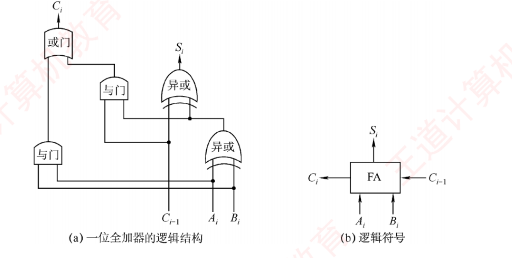
图 2.3 一位全加器（裁自王道 p.33）——(a) 逻辑结构：两个异或门 串起来产生本位和 Si ，两个与门 加一个或门 产生进位 Ci ；(b) 逻辑符号：以后所有加法器图里的 FA 方框都是它。看图时只需确认一件事：进位 Ci 的产生要经过"与门 → 或门"两级门延迟 ——这就是下面串行进位慢的根源。
挖 · 进位表达式里那两项，分别是后面"先行进位"的 G 和 P
书上说 ：Ci = Ai Bi + (Ai ⊕ Bi )Ci−1 。潜台词是 ：这个式子把进位拆成了两半——Ai Bi 是"本位自己就能产生进位" （两个 1 相加，不管低位来不来进位都要进位，记作 Gi ，generate ）；(Ai ⊕Bi ) 是"本位能把低位的进位传过去" （记作 Pi ，propagate ）。所以能考 ：图 2.5 里每个 FA 向上送给 CLA 部件的那两根线，标的正是 Gi 和 Pi 。看懂这一句，图 2.5 就不用死记了 ——CLA 部件干的事就是"拿到所有 G 和 P 后，一口气把每一位的进位都算出来"。
2．串行进位加法器（行波进位加法器）
把 n 个全加器级联 ：每一级的进位输出直接作为下一级的进位输入 ，进位信号逐级传递。
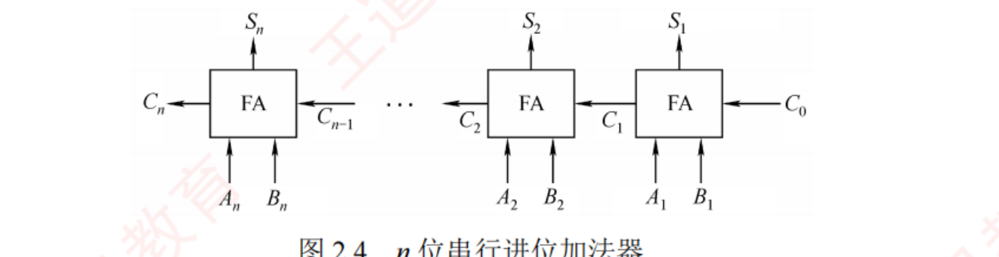
图 2.4 n 位串行进位加法器（裁自王道 p.33）——进位像水波一样从最右边一路推到最左边 （这就是"行波"的由来）。图中实现 A=An …A1 与 B=Bn …B1 逐位相加，得到 S 与最终进位 Cn 。
必记结论 · 两句考点句
① 由于位数固定，结果实际为模 2n 的加法 （溢出部分被丢弃）。例：A=1111、B=0001（4 位）时 S=0000、C4 =1。串行进位加法器的总运算延迟，主要由进位信号从最低位传播到最高位的时间决定。位数越多，进位链越长，延迟越大。因此缩短进位传递路径是提升加法器性能的关键。
挖 · "模 2n 的加法"这五个字，就是整章溢出问题的物理根源
书上说 ：位数固定，结果实际为模 2n 的加法，溢出部分被丢弃。潜台词是 ：硬件从来不"发现"溢出、更不会"阻止"溢出 ——它只是老老实实把高位那一位扔掉。所谓 CF、OF 只是事后贴的一张标签 ，告诉你"刚才扔掉的那位可能有意义"。用不用这张标签，是程序员的事。所以能考 ：① x = 2147483647; x+1 为什么变成负数（回绕，不是报错）；② 2011 综合题 问"该结果是否正确"，答案永远要分"当作无符号 / 当作有符号"两说。硬件不判断对错，只有解释才有对错。
挖 · "进位链决定延迟"这句话，把 ch1 的主频和这里接上了
书上说 ：总运算延迟主要由进位从最低位传播到最高位的时间决定，缩短进位传递路径是提升加法器性能的关键 。潜台词是 ：这条最长的通路就是所谓关键路径（critical path） ，而 时钟周期必须 ≥ 关键路径的延迟 ，否则结果还没稳定就被打入寄存器了。所以"加法器慢"直接翻译成"主频上不去"。 所以能考 ：① ch1 三要素公式里的主频 不是随便定的，它被电路里最慢的那条路卡住；② ch5 单周期 CPU 的时钟周期由最慢的那条指令（通常是 lw）决定 ——同一个道理放大到整条数据通路 ；③ 也解释了流水线为什么能提频（把长路径切成几段短的）。
*3．并行进位加法器（先行进位加法器）
它能几乎同时生成所有进位信号 ，而不是逐级传递：n 个一位全加器连接到一个 n 位先行进位逻辑部件（CLA 部件）位数越多，它比串行进位快得越明显 ；代价是随着位数增加电路复杂度显著提高。
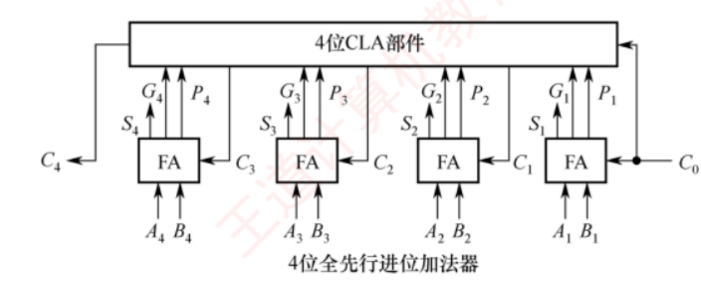
图 2.5 一个 4 位全先行进位加法器（裁自王道 p.34）——四个 FA 不再互相串联 ：每个 FA 把自己的 Gi （本位产生）、Pi （本位传递） 送上去，顶部的 4 位 CLA 部件 统一算出 C1 、C2 、C3 、C4 再发回来。横向的进位链断了，这就是"几乎同时"的含义。
背景 · 考试基本不碰（书上给这节标了 *）
CLA 部件内部的逻辑表达式推导（Ci = Gi + Pi Gi−1 + Pi Pi−1 Gi−2 + …）书上都没写，考纲也不要求。
这一节只需拿走三句话：① 并行进位靠 CLA 部件同时产生所有进位；② 它比串行进位快；③ 位数越多电路越复杂（所以实际机器用"组内并行、组间串行"的折中）。
⚠️ 但图 2.5 要看 ——它是"打断依赖链换取并行"的第一个例子，这个思想在 ch5 流水线里是主角。
串 · "打断依赖链换并行"，这是全书出现次数最多的一招
→ ch5 流水线：指令之间的数据相关（RAW）就是"进位链"的放大版，解决办法（数据前递、乱序 ）本质也是"别等上一级算完"。→ 2.2.4 阵列乘法器：把 n 次迭代摊成一片组合逻辑，同一个思路。→ ch3 多体交叉存储器：把一次长访存拆到多个存储体并行，还是这一招。⟹ 组原里凡是"变快"，几乎都是这两种之一：要么打断串行依赖，要么加一层缓存 。
4．带标志加法器
对 n 位加法器，除了得到结果外还要知道是否溢出、结果正负、结果是否为零 。为此在加法器基础上增加额外逻辑，生成 OF、CF、SF、ZF 四个标志位，每个占 1 位 。
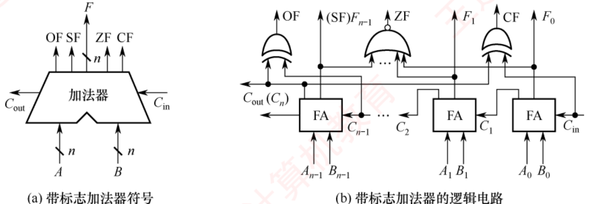
图 2.6 用全加器实现 n 位带标志加法器的电路（裁自王道 p.34）——(a) 是符号（梯形加法器 ，以后各章都用这个形状）；(b) 是内部：OF 由 Cn 与 Cn−1 异或得到 （图上最左那个异或门）、ZF 由所有结果位或非得到 （中间带小圆圈的或门）、SF 直接从最高结果位 Fn−1 引出 、CF 就是 Cout 。四个标志是四根白拿的线，硬件同时算出，不花额外时间。
必记结论 · 四个标志位的产生（图 2.6 原文级）
OF（溢出标志） = Cn ⊕ Cn−1 （最高有效位的进位输出与进位输入是否不同），用于判断有符号数加法是否溢出 。SF（符号标志） = Fn−1 （结果的最高有效位），指示有符号数 结果的正负。ZF（零标志） ：结果所有位均为 0 时置 1。CF（进位/借位标志） ：用于判断无符号数 的加减运算是否溢出。
串 · 这四个标志位以后会有个正式名字：程序状态字 PSW
→ ch5 CPU：ZF/OF/SF/CF 存在状态寄存器（PSW，也叫标志寄存器） 里，它是 CPU 内部寄存器的一种，对程序员可见 （属于 ISA）。→ ch4 指令系统：条件转移指令读的就是 PSW；"哪些指令会影响标志位"是一个常考细节 （如 mov 不影响、add/sub/cmp 影响）。→ OS 进程切换：PSW 必须随 PC、通用寄存器一起保存进 PCB ，否则恢复执行后条件判断会用错标志——这就是"上下文"里"上下文"三个字的具体所指 。→ ch7 中断响应时同样要保存 PSW（中断隐指令的工作之一）。⟹ 现在多花一分钟记住这四个标志，OS 讲进程上下文时你会直接懂"要保存的到底是什么"。
5．算术逻辑单元（ALU）
ALU 是一种组合逻辑电路 ：加法和减法由带标志加法器直接完成 ；乘法和除法通常通过 ALU 配合控制逻辑，以多次加减和移位的方式迭代实现 ；此外还能做与、或、非等逻辑运算。
A、B 为两个 n 位操作数输入端，Cin 为进位输入端，ALUop 为操作控制信号 ，用于选择 ALU 执行的具体功能（选加法时输出 A+B+Cin ）。📕 ALUop 的位数决定了可支持的操作种类数量，例如 3 位 ALUop 最多支持 8 种操作。
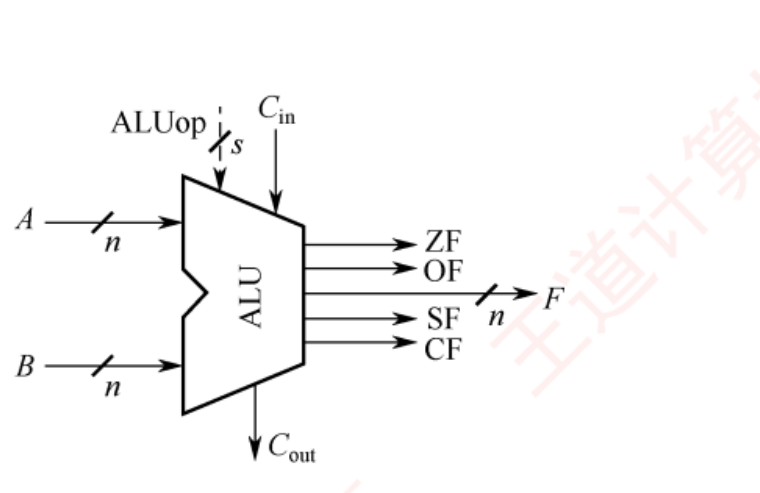
图 2.7 ALU 的基本结构（王道 p.35）——ALUop 从上方进来选功能 ，四个标志从右侧出去。
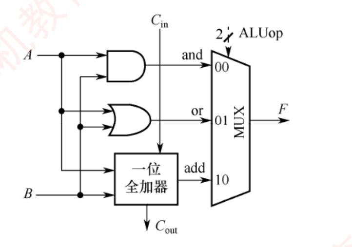
图 2.8 一位 ALU 结构图（王道 p.35）——与门、或门、全加器三路同时算 ，最后由 MUX 按 ALUop 挑一路输出 。3 种操作 ⟹ ALUop 至少 2 位。
挖 · 图 2.8 的真正含义：ALU 不是"选了才算"，而是"全算完再选"
书上说 ：逻辑运算由专用门电路并行计算 ，最终通过 MUX 根据 ALUop 选择输出结果。潜台词是 ：与、或、加法三条路是同时通电、同时出结果的 ，ALUop 只决定"让哪一路的结果走出去"。没被选中的那两路照样耗电、照样占面积——这就是组合逻辑用空间换时间的代价。 所以能考 ：① 「ALU 完成一次运算需要几个时钟周期」→ 组合逻辑，一个周期内出结果 （只要周期够长）；② 为什么"ALU 支持的操作越多，芯片面积越大、关键路径越长"；③ ch5 会问"数据通路中哪些部件是组合逻辑、哪些是时序逻辑"——ALU、MUX、译码器是组合；寄存器、PC、存储器是时序。
挖 · "3 位 ALUop 最多 8 种操作"是一道现成的送分题
书上说 ：ALUop 的位数决定可支持的操作种类；3 位最多 8 种；图 2.8 有 3 种操作故 ALUop 至少 2 位。潜台词是 ：这是编码位数 ⇄ 状态数 的老关系，正反两个方向都能出题——给位数求种类数（2k ），给种类数反求位数（⌈log2 k⌉） 。所以能考 ：「某 ALU 支持 12 种运算，ALUop 至少几位？」→ 4 位 （3 位只够 8 种）。"至少"两个字就是采分点 ，它意味着要向上取整。2 k⌉ 在 ch3（地址位数）、ch4（操作码位数）、ch5（微指令字段）会各考一次，是全书复用率最高的一个小公式 。
挖 · 书上把 ALU 功能拆成三类，其实是在解释"为什么乘法慢"
书上说 ：加减法由带标志加法器直接完成 ；乘除法通过多次加减和移位迭代实现 ；逻辑运算由门电路完成。潜台词是 ：乘除法慢是结构性的，不是实现得不好 ——它压根就不是一次运算，而是一段被硬件写死的循环（n 次）。所以能考 ：① ch1 性能指标里「为什么乘法指令的 CPI 远大于加法指令」；② 2.2.4 会算出迭代式乘法器要 约 2n 个时钟周期 ；③ ch5 里"乘法部件为什么要单独做成多周期功能部件、或单独做一条流水线"。
串 · ALUop 是"一根控制线决定数据走哪条路"的第一次出场
→ ch5 CPU：控制器产生的控制信号 、微程序控制的微指令字段 、数据通路里十几个 MUX 的选择端 ，全是同一个模式。图 2.8 里那个 MUX，到 ch5 的单周期数据通路图上会长成一片。→ 2.2.3 马上要看的图 2.9，那根 Sub 线就是一个"迷你 ALUop"。→ ch6 总线：总线上的"选择哪个设备说话"（总线仲裁）也是同一个抽象。⟹ 记住这个模式：数据路径是死的，控制信号是活的 ；组原后半本书都在讲"控制信号怎么产生"。
串 · 组合逻辑 vs 时序逻辑：这条界线从这里开始，一直画到 ch5
→ 本节 全加器、CLA、ALU、MUX 都是组合逻辑 （输入变→输出立刻跟着变，不需要时钟）。→ 2.2.4 而乘法器/除法器里的 寄存器 X、P、Y、计数器 Cn 是时序逻辑 （靠时钟一拍一拍推进）——所以乘法要 2n 个周期，而 ALU 一次运算在一个周期内完成。 → ch5 CPU：数据通路 = 组合逻辑（运算、选择、译码）+ 时序逻辑（PC、寄存器组、存储器） ；时钟周期的长短由两个时序元件之间那段最长的组合路径决定 。→ ch5 单周期 / 多周期 / 流水线的区别，本质就是"在组合路径中间插几道寄存器 "。⟹ 从现在起，看每一张电路图都先分类：哪些方框是"算"的，哪些方框是"存"的 。ch5 的图会因此变得可读。
2.2.2 定点数的移位运算
📄 p.35
考点追踪：逻辑移位运算（2018）；算术移位运算（2012、2017、2018）
当计算机没有乘/除运算电路时，可以用加法 + 移位 实现乘除。对任意二进制整数：左移一位（若未溢出）相当于乘以 2；右移一位（忽略移出的末位）相当于除以 2。 按操作数类型分为两种移位：
逻辑移位（把操作数看作无符号 ） 算术移位（把操作数看作有符号补码 ） 左移 高位移出，低位补 0 。若移出的高位是 1，则溢出。 高位移出，低位补 0 。若移出的高位与原符号位不同（左移后符号位改变），则溢出。 右移 低位移出，高位补 0 。 低位移出，高位补符号位 。若移出的低位是 1，则影响精度。 书上的例子 4 位无符号 0001(1) 左移 → 0010(2)，未溢出；0001(1) 右移 → 0000(0)；1000(8) 左移 → 0000，溢出 4 位补码 0010(+2) 左移 → 0100(+4)，未溢出；1001(−7) 左移 → 0010，符号由负变正 ⟹ 溢出 （−14 越界）；1001(−7) 右移 → 1100(−4)，丢了最低位，影响精度
挖 · 书上那个 1001(−7) 右移 → 1100(−4)，藏着一个必错点
书上说 ：算术右移高位补符号位，−7 右移一位得 −4。潜台词是 ：−7 ÷ 2 = −3.5，而结果是 −4 —— 补码算术右移是向负无穷取整 ，不是向零。而 C 语言的 / 规定是向零取整 （−7/2 = −3）。两者对负数差 1。 所以能考 ：① 判断「x >> 1 与 x / 2 结果总是相同」——错，对负奇数不同 ；② 编译器不能 把有符号除 2 直接优化成算术右移（要先加偏置修正）；③ 综合题里同时出现 y/2 和"算术右移"两种说法时，必须分别处理 。
挖 · 两种移位的"溢出判据"为什么长得不一样
书上说 ：逻辑左移看"移出的高位是不是 1"，算术左移看"符号位有没有变"。潜台词是 ：两者判的不是同一件事 ——无符号数的全部位都是数值，移出去的 1 就是真的丢了数值 ；有符号数的最高位是符号，移出去的那一位如果和新符号位一样，其实什么信息都没丢 （比如 1110(−2) 左移得 1100(−4)，移出的 1 与新符号位相同，没溢出）。所以能考 ：给一个左移让你判溢出，先问"这题把它当有符号还是无符号" ——同一个位串，两种判法结论可以相反。这是本章总纲"一串位两种语义"在移位上的化身。
串 · 移位判溢出，与加减法判溢出是同一件事的两个面
→ 2.2.3 逻辑移位看的其实就是 CF（无符号） ，算术移位看的就是 OF（有符号） 。→ 2.2.4 "加法 + 移位迭代实现乘法"直接通向乘法器（部分积每轮右移一位 ）。→ ch4 指令系统：移位指令分 SHL/SHR（逻辑）与 SAL/SAR（算术）两套，分套的原因就在上面那张表里 。→ 数据结构 堆的下标运算 i<<1、散列的 h>>k 用的都是逻辑移位（下标非负）。
挖 · "没有乘除电路时用加法和移位实现"——这句开场白其实在讲编译器
书上说 ：当计算机中没有乘/除运算电路时，可以通过加法和移位相结合 的方法来实现乘/除运算。潜台词是 ：即使机器有 乘法器，编译器也常常主动改用移位——因为移位只要 1 个周期，乘法要十几个 。x * 8 会被编译成 x << 3，x * 10 会被编译成 (x<<3) + (x<<1)。所以能考 ：① 2.2.4 的"移位-加减法"实现方式（乘以 13 = X<<3 + X<<2 + X）就是这一句的正式版本；② ch1 性能分析题里"优化后指令条数/CPI 怎么变"；③ ⚠️ 但除法不能这么优化 ——x / 2 对负数不等于算术右移（差 1），编译器必须先加偏置修正。乘法可以随便换，除法不行。
2.2.3 定点数的加减运算 ⭐
📄 p.35–39
考点追踪：补码的加减运算（2009、2011、2017、2025）；补码运算的溢出判断（2010、2011、2014、2018、2021、2025）；补码加法器的实现原理（2011）；各类标志位的分析（2011、2018、2022、2023、2024）；CF 标志位的作用（2024）
我的补讲 · 这一小节是整个 2.2 的重心，先看清楚要拿走什么
2.2 一共 21 页、13 道真题，其中「溢出判断」跨 2010–2025 共 6 年、「各类标志位的分析」2022/2023/2024 连考三年 ——两项合起来占了 2.2 真题的三分之二，全部集中在这一小节 。这一小节只有四样东西要背死 ：溢出判别三法 （人工用哪个、硬件用哪个）；② 四个标志位的公式 （尤其 CF = Sub ⊕ Cout ）；③ 无符号比大小：ZF → CF ；④ 有符号比大小：ZF → OF⊕SF 。性价比远不如这四条 。时间不够时，这一小节读三遍，2.2.4 读一遍 。
1．补码加减运算
[A+B]补 = [A]补 + [B]补 (mod 2n+1 ) [A−B]补 = [A]补 + [−B]补 (mod 2n+1 )
必记结论 · 补码运算的四个特点
① 按二进制加法规则运算，逢二进一。减法则把被减数与"减数的负数补码"相加 。符号位与数值位一同参与运算，结果的符号位由运算自然得出 （不用单独处理符号）。运算结果自动截断为 n+1 位（模 2n+1 ），高位进位被丢弃，结果仍为补码形式。
【例 2.3】 （p.36）字长 8 位，A = 15，B = 24，求 [A+B]补 与 [A−B]补 ：
[A]补 = 0000 1111 [B]补 = 0001 1000 [−B]补 = 1110 1000
[A+B]补 = 0000 1111 + 0001 1000 = 0010 0111 符号位 0 ⟹ 真值 +39
[A−B]补 = 0000 1111 + 1110 1000 = 1111 0111 符号位 1 ⟹ 真值 −9 ✅ Python 复算通过
挖 · 例 2.3 里"符号位为 1，真值为 −9"这一步，藏着一个很多人没意识到的便利
书上说 ：[A−B]补 = 1111 0111，符号位为 1，真值为 −9 。潜台词是 ：结果直接就是补码，不需要任何"还原"步骤 ——你只是读 了一下它（符号位 1 ⟹ 负数，数值位取反加 1 得 9）。这正是补码的全部价值：输入是补码、输出还是补码，中间只有一次加法，符号位全程和数值位一起走。 所以能考 ：① 综合题里让你写"运算过程"，正确的卷面是"列竖式相加 → 直接读结果的补码 → 写真值"三行 ，不要画蛇添足地写"再转回原码"；② 也说明为什么补码的减法不需要判断谁大谁小 （对比原码加减法必须先比绝对值）——硬件因此省掉了一个比较器和一堆控制逻辑。
2．溢出判别方法
必记结论 · 溢出只可能发生在"同号相加"或"异号相减"
补码加减运算仅在同号相加或异号相减时可能发生溢出 （两正相加得负，或负减正得正）。三种判别方法（V=1 表示溢出）：
方法 逻辑表达式 用在哪 ① 一位符号位 （看符号）V = As Bs Ss + As Bs Ss 人工做题最快 ：两个加数同号、结果异号 ⟹ 溢出② 符号位 + 进位 V = Cn ⊕ Cn−1 硬件实际用的 （图 2.6 的 OF 就是它）③ 双符号位 （变形补码）V = Ss1 ⊕ Ss2 只在教材题里出现。00 正数无溢 / 01 正溢 / 10 负溢 / 11 负数无溢
挖 · 三种判溢法不是并列的三个知识点，是三个场合的三把工具
书上说 ：常用的溢出判别方法有以下三种。潜台词是 ：它们的适用场合完全不同，选错了要么慢要么答不到点上 ——考场上给你机器数判溢出，用方法一（看符号），3 秒出答案 ，根本不必去数进位；但只要题目问"OF 标志是怎么产生的""加法器如何检测溢出"，必须答方法二 Cn ⊕ Cn−1 ——这是硬件的真实做法，答"看符号"不给分；所以能考 ：2011 真题 考的是"补码加法器的实现原理"（要答方法二），而 2014、2018 考的是"下列哪个表达式溢出"（用方法一秒杀）。同一个知识点，两种问法，两种答案。
陷阱 · "异号相加、同号相减"永远不会溢出——这是排除法利器
看到 (+5) + (−3)、(−7) − (−2) 这种异号加 / 同号减 ，看都不用看，不可能溢出 （结果的绝对值必然不超过两个操作数中较大的那个）。2014、2018 的"四个表达式哪个溢出"型真题，靠这一条能先划掉一半选项 ，剩下的再算。有符号溢出（OF） 。无符号的 CF 完全是另一套 ——0 − 1 异号？不，无符号根本没有符号，它一定产生借位。别把两套判据串味。
3．加减运算电路
📕 核心句：在计算机中，无论是无符号数还是有符号数的加减运算，均采用同一套硬件电路实现，即"一套电路，两种语义"。
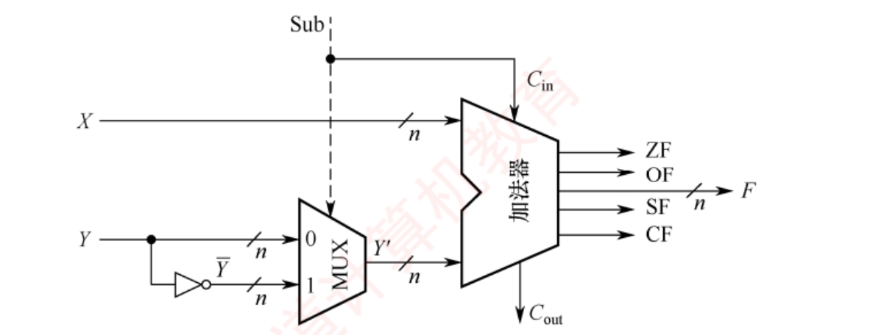
图 2.9 加减运算部件（裁自王道 p.36）——本节最重要的一张图 。X 直接进加法器；Y 分两路，一路直连 MUX、一路经 n 位反相器（得到 Y ）再进 MUX 。控制信号 Sub 一根线同时干两件事：既决定 MUX 选哪一路，又作为加法器的最低位进位 Cin 。 这正好凑出减法所需的"取反 + 加 1"。输出 n 位结果 F 与 ZF/OF/SF/CF 四个标志。
加法（Sub = 0） 减法（Sub = 1） MUX 选中 Y 原样通过 Y Cin 0 1 （就是 Sub 本身）加法器实算 X + Y + 0 X + Y + 1 ＝ X − Y + 2n 当无符号看 F = (X+Y) mod 2n ；n 时 Cout =1 ⟹ 溢出 ，CF = Cout X ≥ Y ⟹ Cout =1，无借位 ；out =0，有借位 ⟹ 溢出 。CF = Cout 当有符号看 F = [X+Y]补 ；同号相加得异号 ⟹ OF=1 F = [X−Y]补 ；正减负得负 / 负减正得正 ⟹ OF=1
必记结论 · 减法为什么是"取反加一"（书 p.37 脚注的推导，值得记住结论）
X − Y = X + (2n − Y) − 2n ，而 Y + Y = 2n − 1 （全 1），所以 2n − Y = Y + 1 。X − Y = X + Y + 1 − 2n ，其中 X + Y + 1 是纯加法（加法器能做），减掉的 2n 就是被丢弃的那个高位进位。
陷阱 · 加法器 Y 端输入的是 Y ，不是 [−Y]补 （书专门加注意栏警告，习题 18 就考这个）
减法时送进加法器的是 Y （只取反，没加 1）由 Cin = Sub = 1 完成的 。题目问"减法时加法器两个输入端分别是什么"，填 [−Y]补 是标准错法 ——[−Y]补 = Y + 1，那个 1 已经被 Cin 领走了，你不能算两次。记法：反相器只会取反，它不会加法。
挖 · ch2 最核心的一条：为什么 CF 和 OF 必须并存
书上说 （p.37 注意栏）：运算器本身无法识别所处理的二进制串是有符号数还是无符号数。 例如 0 − 1 = 00…0 + 11…1 = 11…1，解释为有符号是 −1（正确），解释为无符号是 2n −1（与数学结果不符）。此类易混点是统考极易考查的内容。 潜台词是 ："溢出"根本不是一个客观事实，而是一个取决于你怎么解释这串位的判断。 硬件不知道你想要哪种，所以它两个都算好放在那里（CF 给无符号看、OF 给有符号看），用哪个由程序员/编译器决定。 所以能考 ：给一次加法的位模式，同时问"有符号溢出吗""无符号溢出吗"——两个答案可以不同 。书 p.38 的 010 + 011 就是现成反例：OF = 1（3 位补码 2+3=5 越界），但当无符号看 2+3=5 完全没溢出（CF = 0） 。⟹ 这一条同时解释了整章的三处设计 ：2.1 类型转换"位不变解释变"、2.2 双标志并存、2.3 同一机器数按 int / float 两读。
4．四个标志位的含义
标志 产生方式 对谁有意义 含义 ZF 零标志结果 F = 0 时置 1 无符号、有符号都有意义 结果是否为零 OF 溢出标志OF = Cn ⊕ Cn−1 仅对有符号数有意义 有符号运算是否溢出 SF 符号标志F 的最高位 仅对有符号数有意义 结果的正负 CF 进位/借位加法：CF = Cout ；减法：CF = Cout CF = Sub ⊕ Cout 仅对无符号数有意义 无符号运算是否溢出（进位/借位）
书上的两组例子（均已复算）：无符号加法 010 + 011 = 101，OF = 1 但结果并未溢出 （C3 =0、C2 =1 故 OF=1；Cout =0 故 CF=0，2+3=5 未溢出）——说明 OF 对无符号数无意义 ；而无符号 110 + 011 产生进位、无符号 000 − 111 产生借位，两者 CF 均为 1，都是无符号溢出 。
陷阱 · 减法的 CF 要取反 ——这是标志位题最常见的错法
加法时 CF = Cout （有进位就是溢出），但减法时 CF = Cout （没有 进位才是借位、才是溢出）。合起来就是 CF = Sub ⊕ Cout 。直接抄 Cout 当 CF 是标准错法。 直觉上也讲得通：减法在硬件里是"加了个 2n 再减回去"，够减的时候那个 2n 会以进位的形式冒出来 ——所以有进位 = 够减 = 不借位 。记法：加法"有进位就出事"，减法"没进位才出事"。
挖 · 书 p.75 常见问题 2 就地补一句：什么叫"无符号溢出"
书上说 （p.75）：对 n 位无符号整数，当运算结果 ≥ 2n 时硬件仅保留低 n 位（对 2n 取模），舍去高位，导致截断后的值不等于真实结果，这种现象称为无符号溢出，通常通过 CF 检测 。潜台词是 ：无符号溢出和有符号溢出是同一个物理事件 （丢了最高位）的两种解释 ，只是判据不同——无符号看"丢的那位是不是真的有值"（Cout ），有符号看"丢的那位和符号位是否矛盾"（Cn ⊕Cn−1 ）。所以能考 ：把这一问和 2.2.3 并排记，比背两遍省一半时间。另外注意"无符号减法的溢出"叫借位，本质是结果为负、超出 [0, 2n −1] 的下界。
5．两套比大小规则（2022–2024 连考三年）
无符号数 ：设 A、B 为无符号数，执行 A − B 后——
情形 书上示例 ZF CF A = B 011 − 011 = 000 1 0 A > B 010 − 001 = 001 0 0 A < B 000 − 001 = 111（借位） 0 1
ZF=1 ⟹ A = B； ZF=0 且 CF=0 ⟹ A > B； CF=1 ⟹ A < B （CF=1 时 ZF 必为 0，无须再看）
有符号数 ：设 A、B 为有符号数，执行 [A]补 − [B]补 后——
情形 书上示例 ZF OF SF OF⊕SF A = B 011 − 011 = 011 + 101 = (1)000 1 0 0 0 A > B（无溢出） 010 − 001 = 010 + 111 = (1)001 0 0 0 0 A > B（有溢出 ） 011 − 101 = 011 + 011 = 110 0 1 1 0 A < B（无溢出） 000 − 001 = 000 + 111 = 111 0 0 1 1 A < B（有溢出 ） 101 − 011 = 101 + 101 = (1)010 0 1 0 1
ZF=1 ⟹ A = B； ZF=0 且 OF⊕SF=0 ⟹ A > B； ZF=0 且 OF⊕SF=1 ⟹ A < B
挖 · 两套规则的骨架完全一样，差别只有一句话
书上说 ：无符号看 ZF 和 CF，有符号看 ZF、OF 和 SF。潜台词是 ：两套规则的结构是同一个 ——先用 ZF 判等，再看一个"方向位" 。区别只在方向位怎么来：无符号一个 CF 就够；有符号要 OF ⊕ SF 两位异或。 为什么有符号要多一个 OF？因为溢出会把符号位翻反。 看上表第 3 行：3 − (−3) = 6 越界，结果的符号位变成了 1（看着像"A < B"），但 OF=1 告诉你"这个符号位是假的"，异或一下就纠正回来了 。口诀：无符号看借位；有符号看"符号位有没有被溢出骗了"。 所以能考 ：2022–2024 连考三年 都是"给标志位组合反推大小关系"或"换一组数后 OF/CF 怎么变"。把上面两张表当乘法口诀表背下来，这三年的题是白送的。
挖 · 为什么"比大小"要靠减法？——顺手解释了 CPU 里的 cmp 指令
书上说 ：设 A、B 为无符号数，执行运算 A − B 后 看标志位。潜台词是 ：CPU 里没有"比较器"这个独立部件，比较就是做一次减法然后只看标志、把结果扔掉。 这就是 x86 cmp 指令的实质（它等于 sub 但不写回结果）。所以能考 ：① ch4 会问"cmp 指令与 sub 指令的区别"（只差写不写回 ）；② ch5 数据通路里，条件转移的判断信号是从 ALU 的标志输出直接引到控制器 的，不需要额外硬件；③ 也解释了为什么 C 语言里 if (a < b) 对 int 和 unsigned 会编译出不同的跳转指令 ——查的标志位不一样。
串 · 这两张表就是 ch4 条件转移指令分两套的原因
→ ch4 指令系统：x86 的 JA/JAE/JB/JBE（above/below，无符号，查 CF 与 ZF ）与 JG/JGE/JL/JLE（greater/less，有符号，查 SF、OF、ZF ）分成两套，根源就在这里 。→ ch5 CPU：这几个标志位是从 ALU 送回控制器的那几根线 ，控制器据此决定 PC 要不要跳。→ OS 同步原语：compare-and-swap 的"compare"也是这套减法+判标志的机制。⟹ 一句话：C 里写 < 时编译器会先看变量类型，再决定生成哪一条跳转指令。类型错了，跳转就错了。
背景 · 考试不碰（书上给这段标了 *）
原码的加减运算 ：规则是"同号求和、异号求差"——符号相同则数值位相加、符号不变（数值位最高位进位即溢出）；符号不同则用绝对值大的减去绝对值小的 ，结果符号跟绝对值大的那个。减法则先把减数符号取反再按加法做。原码加减法必须先比较两数的绝对值大小再决定加还是减，控制逻辑复杂，难以用单一加法器高效实现，因此现代计算机普遍采用补码。 但这段别完全跳过 ：2.3.2 会说"IEEE 754 的尾数是定点原码小数 "，读到那里如果记得这段，会以为浮点加减要用这套复杂规则。其实不用 ——书 p.76 常见问题 4 给了答案，我把它放在 2.3.2 就地点破了。
2.2.4 定点数的乘除运算
📄 p.39–43
考点追踪：乘法运算的原理及分析（2020、2024）；乘法运算电路中控制逻辑的作用（2020）；无符号数乘法指令的溢出判断（2019、2020）；有符号数乘法指令的溢出判断（2021）；除法运算的异常及处理（2025）；除法运算器的结构（2025）；除法运算器的初始化步骤（2025）
我的补讲 · 这一小节怎么读：只考"结构差别"，不考手算
2.2.4 有 5 页、7 个考点标注，看着吓人，但真题从来不让你手算 32 位乘除法 （书上明说"采用补码乘法规则计算是费力不讨好的做法"）。三张结构图（图 2.10 / 2.11 / 2.12）只差三处，考的就是这三处。 本小节的产出只有三样 ：① 三张图的对比表 （见下方）；② 乘法溢出的两个判据 ；③ 除法的三条"唯一" （无符号永不溢出 / 补码商溢出只有一种 / 快速退出条件）。其余当阅读理解看过即可。
1．乘法运算：原码乘法的原理
原码乘法的特点是符号位与数值位分别处理 ：① 乘积的符号位 = 两个乘数符号位的异或 ；② 数值位是两个绝对值的乘积（归结为两个无符号数 相乘）。手算过程（X = 1101 = 13，Y = 1011 = 11）：
1 1 0 1 被乘数 X = 1101 (13)
× 1 0 1 1 乘数 Y = 1011 (11)
---------------
1 1 0 1 ← X × y₁ × 2⁰
1 1 0 1 ← X × y₂ × 2¹
0 0 0 0 ← X × y₃ × 2² （y₃ = 0，本行全 0）
1 1 0 1 ← X × y₄ × 2³
---------------
1 0 0 0 1 1 1 1 = 143 ✅ 13 × 11 = 143 复算通过
硬件不这么摆，而是把"左移被乘数"改成"右移部分积" ，化成迭代形式（P0 = 0，>>1 表示逻辑右移一位 ）：
P1 = (P0 + X × y1 ) >> 1 P2 = (P1 + X × y2 ) >> 1 … Pn = (Pn−1 + X × yn ) >> 1
📕 这里的右移是位操作的一部分，而非数学上的除法；所有中间结果均在 2n 位存储空间中保留完整精度。 经过 n 次迭代，最终的 2n 位 部分积 Pn 就是乘积。📕 为了保证精度，部分积需要使用 2n 位寄存器存储。
挖 · 为什么手算是"左移被乘数"，硬件却是"右移部分积"？
书上说 ：硬件实现中通常采用部分积右移的方式 把求和过程转换为迭代形式。潜台词是 ：两种做法数学上等价（相对移动而已），但硬件成本天差地别 ——若按手算左移被乘数，被乘数寄存器要能装下 2n 位并且每轮都要变；改成右移部分积后，被乘数寄存器 X 全程不动，只需 n 位 ，加法器也只需 n 位。省了一半的寄存器和一整个可变移位器。 所以能考 ：2020、2024 考"乘法运算的原理及分析"，选项里常有"被乘数寄存器在运算过程中保持不变"——这是对的 ；而"部分积左移"是错的。记住那句话：X 不动，P 和 Y 一起往右挪。
2．无符号整数的乘法运算电路
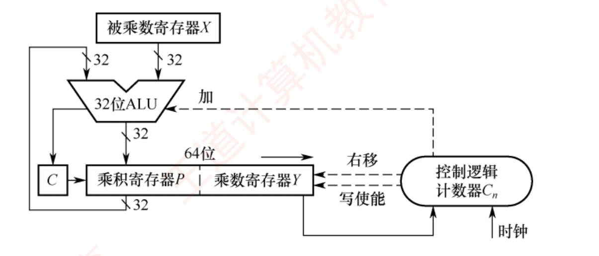
图 2.10 一个 32 位无符号数乘法运算器的逻辑结构（裁自王道 p.40）——注意三处：ALU 只标了「加」 ；中部 乘积寄存器 P | 乘数寄存器 Y 拼成 64 位一起右移 ；左边那个小方框 C 是进位触发器 （右移时它的值会挤进 P 的最高位）。右侧椭圆是控制逻辑 + 计数器 Cn ，由时钟驱动。
必记结论 · 乘法器的四个寄存器与一轮迭代（背这四步）
初始化 ：
被乘数寄存器 X 存被乘数，
整个乘法过程中保持不变 ；
乘数寄存器 Y 初始存乘数；
乘积寄存器 P 初始化为 0 ；
计数器 Cn 初始化为 n 。
判断 ：把 Y 的最低位 送入控制逻辑。
加法 ：Y 最低位为 1 则 P ← P + X ，进位存入进位触发器 C；为 0 则空操作 。
移位 ：把 C、P、Y 视为一个整体做一次逻辑右移 ——C 移入 P 的最高位，P 的最低位移入 Y 的最高位，Y 的最低位被丢弃 。
计数 ：Cn 减 1，不为 0 则继续，否则结束。
结果 ：
64 位乘积存放在寄存器对 [P : Y] 中，P 是高 32 位、Y 是低 32 位。
溢出判断 ：
若高 32 位 P 不为零，说明乘积超出 32 位无符号数范围，发生溢出 ，此时处理器把
OF 与 CF 同时置 1 。
挖 · "Y 的最低位被丢弃"一点都不浪费——这是全场最精妙的一处设计
书上说 ：右移时 P 的最低位移入 Y 的最高位，Y 的最低位被丢弃 。潜台词是 ：Y 这个寄存器被复用了两次 ——开头它装乘数，每轮从低端"用掉"一位（用完就丢）；同时乘积从高端一位一位挤进来。n 轮之后，乘数正好用完，Y 里装的恰好是乘积的低 n 位。 一个寄存器干了两份活，省掉一个 n 位寄存器 。所以能考 ：2020 真题 问"乘法运算电路中控制逻辑的作用"，以及"运算结束后各寄存器里是什么"。答案：X 还是被乘数，[P:Y] 是 2n 位乘积，原来的乘数已经被移没了。
3．有符号整数的乘法运算电路（Booth 算法）
有符号整数用补码表示，乘法要同时处理符号与数值。Booth 算法让符号位与数值位统一参与运算，直接生成补码形式的乘积，对正数负数一视同仁。 📕 Booth 算法的数学推导较为复杂，通常不在考研考查范围内 ，只需掌握结构。
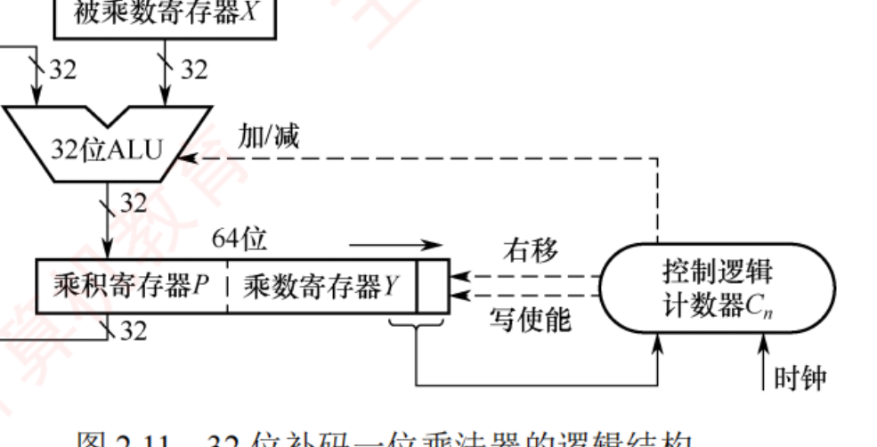
图 2.11 32 位补码一位乘法器的逻辑结构（裁自王道 p.40）——整体架构与图 2.10 几乎一样，请逐处比对 ：ALU 这里标的是 「加/减」 （不再只有加）；Y 的右侧多挂了一个辅助位 y−1 （初始化为 0）；移位改成算术右移 。三处差别就是这一小节的全部考点。
必记结论 · Booth 一轮迭代（与无符号乘法器逐条对照着记）
初始化 ：X 存被乘数保持不变；P 初始化为 0；
Y 存乘数，且在其右侧附加一个辅助位 y−1 ，初始化为 0 ；C
n 初始化为 n。
判断 ：把 Y 的最低位 y0 与辅助位 y−1 组合成两位码 送入控制逻辑。
加减 ：组合为 10 ⟹ P ← P − X ；01 ⟹ P ← P + X ；00 或 11 ⟹ 空操作 。
移位 ：把 P、Y 和 y−1 视为整体做一次 算术右移 （P 的最低位移入 Y 的最高位，Y 的最低位移入 y−1 ，原 y−1 被丢弃）。
计数 ：Cn 减 1，不为 0 则继续。
结果 ：64 位乘积在
[P : Y] 。
溢出判断 ：
若高 32 位 P 不是低 32 位 Y 的符号扩展（即 P 的所有位不全等于 Y 的符号位），则判定溢出 ，OF 与 CF 同时置 1。
挖 · 三张运算器结构图只差三处——这张对比表就是习题 23 的四个选项
书上说 ：图 2.11 的整体架构与图 2.10 非常相似，
主要区别在于控制逻辑 。
潜台词是 ：命题人不会问"乘法器怎么工作"，只会问"这两者/三者有什么不同"。
把差异列成表，题就做完了 ：
无符号乘法器（图 2.10） 补码乘法器 Booth（图 2.11） 除法器（图 2.12） 判断依据 Y 的最低位（1 位 ） y0 y−1 两位组合 试商比较（R − Y 的正负） ALU 标注 加 加 / 减 加 / 减 移位方向 右移 右移 左移 （← 唯一往左的）移位类型 逻辑右移 算术 右移（保符号）无符号逻辑 / 补码算术 溢出判据 P ≠ 0 P 不是 Y 的符号扩展 无符号永不溢出 ；补码仅 −2n−1 ÷ (−1)结果在哪 [P : Y]（P 高 Y 低） [P : Y] 商在 Q，余数在 R
所以能考 ：
2021 真题 考有符号乘法的溢出判断（答"P 不是 Y 的符号扩展"），
2025 真题 考除法器结构与初始化。
把这张表背下来，2.2.4 的题就没有别的花样了。
挖 · 两个溢出判据其实是同一句话，别分开背
书上说 ：无符号看"P 不为零"，有符号看"P 不是 Y 的符号扩展"。潜台词是 ：两者都在问同一件事——"把 2n 位乘积砍成 n 位，砍掉的那半有没有携带信息？" 无符号 ：低 n 位装得下 ⟺ 高 n 位全是 0 ；有符号 ：低 n 位装得下 ⟺ 高 n 位全是低半部分符号位的复制 （因为补码的正数高位补 0、负数高位补 1，本来就该长这样）。换个说法：无符号看"高 n 位全 0"，有符号看"高 n+1 位全相同" （把低半的符号位也算进来）。所以能考 ：这条判据与 2.1.4 的位截断 是一枚硬币的两面——"截断后值不变"的条件，就是"被截掉的高位是符号扩展" 。2024 那道 int→short→int 的题用的正是这个判据。
串 · 寄存器对 [P : Y] 会在 ch4/ch5 以真实寄存器名出现
→ ch4 指令系统：x86 的 mul 指令把 64 位乘积放在 EDX:EAX （EDX 高 32 位、EAX 低 32 位）——就是这里的 [P : Y] ；div 则反过来，被除数放 EDX:EAX，商回 EAX、余数回 EDX（就是这里的 Q 和 R ）。→ ch5 CPU：所以乘除法指令要写回两个寄存器 ，数据通路上比普通运算多一条回写路径，这也是它们在流水线里"不合群"的原因之一。→ 2.1.4 而 C 语言里 int * int 只保留低 32 位 ——高 32 位那半被直接丢弃 ，这正是位截断 ，也正是"乘法溢出"的定义。⟹ 硬件算出了 2n 位，语言只收了 n 位；中间那道"要不要看高半部分"的判断，就是溢出判据。
4．乘法运算的三种实现方式
方式 怎么做 速度 / 成本 迭代式乘法器 上面讲的经典结构（ALU + 移位器 + 寄存器 + 控制逻辑），每轮处理一位乘数 若一次 ALU 运算和一次移位各需 1 个时钟周期，n 位乘法约需 2n 个时钟周期 阵列乘法器 全并行 ：所有部分积同时生成，以二维阵列组织，再由加法器网络逐级压缩求和纯组合逻辑 ，时钟周期够长时可在单个周期内完成一次乘法 ；面积最大移位-加减法 用移位与加减模拟乘法（例：乘以 13 = X<<3 + X<<2 + X ） 硬件成本最低，速度最慢
串 · 这三种实现，正是 ch1「CPI」这个数字的来源
→ ch1 性能指标：同一条乘法指令，阵列乘法器 CPI ≈ 1、迭代式 CPI ≈ 2n ；而机器没有 乘法指令时，编译器要展开成一段循环——连"指令条数"这一项都变了 。三要素公式里的两个因子，都被"乘法怎么实现"这一个选择动了。 → ch5 CPU：乘法部件为什么要做成多周期功能部件、为什么单独开一条流水线。→ ch4 指令系统：CISC/RISC 之争的一个典型问题就是"要不要提供乘法指令"——提供与否属于体系结构（ISA），怎么实现属于组成 （ch1 已埋过这个例子）。⟹ 这是全书唯一一处，你能同时看见 ISA 层与实现层的同一个决策。
5．除法运算
必记结论 · 正式计算之前的三条预判（考的就是这三条，不是手算）
① 若被除数为 0 且除数不为 0 ，或 |被除数| < |除数| ，则商为 0，余数等于被除数 ；被除数不为 0、除数为 0 ，发生 "除数为 0" 异常 ；两者都为 0 ，发生除法错误异常 。仅当两者都不为 0 且 |被除数| ≥ |除数| 时，才进入正式的迭代过程。
手算示例（X = 15 = 0000 1111，Y = 2 = 0010）：按固定位宽书写被除数并在高位补 0 （前导零不改变数值），然后从最高位起逐位试商：
0 0 1 1 1 商 = 0111 = 7
0010 ) 0 0 0 0 1 1 1 1
0 0 1 0
-------
0 0 1 1
0 0 1 0
-------
0 0 1 1
0 0 1 0
-------
0 0 0 1 余数 = 0001 = 1 ✅ 15 ÷ 2 = 7 …… 1
步骤：① 取被除数的高 n 位（与除数同宽）作初始部分被除数与除数相减——够减则上商 1、差为中间余数；不够减则上商 0、中间余数即该部分被除数。② 把被除数下一位"带下来"拼到余数末尾，重复。 📕 硬件采用同样策略：把 n 位被除数高位补 0 扩展为 2n 位，以支持统一的迭代过程。
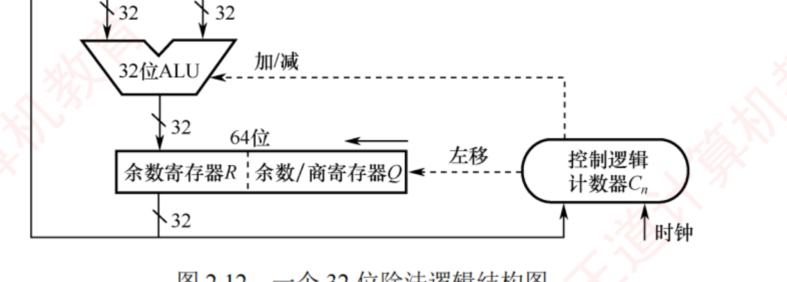
图 2.12 一个 32 位除法逻辑结构图（裁自王道 p.42）——请与图 2.10 / 2.11 并排看 ：顶部换成除数寄存器 Y ；中部是 余数寄存器 R | 余数/商寄存器 Q 拼成 64 位，箭头标的是 「左移」 （乘法器是右移，这是三张图最醒目的差别 ）；ALU 标 「加/减」 （试商要减、不够减要加回去）。
必记结论 · 除法器一轮迭代（恢复余数法）
初始化 ：
除数寄存器 Y 存除数，全程不变；
余数/商寄存器 Q 初始存
n 位被除数，迭代中
逐步生成 n 位商 ；
余数寄存器 R ——
无符号除法初始化为 0 ，
补码除法则把所有位初始化为被除数的符号位（即符号扩展） ← 两者唯一的初始化差别 ；计数器 C
n 初始化为 n。
移位 ：把 R 与 Q 视为整体做一次左移 （无符号是逻辑左移，补码是算术左移）——Q 的最高位移入 R 的最低位，Q 的最低位空出来接收新的商位。
试商 ：算 R − Y 。结果 ≥ 0 ⟹ 商位为 1，把差写回 R；结果 < 0 ⟹ 商位为 0，并执行 R + Y 把余数恢复 回来 （撤销这次减法）。
计数 ：Cn 减 1，不为 0 则继续。
结果 ：
n 位商在 Q，n 位余数在 R （补码除法中余数的符号与被除数相同）。
陷阱 · 📕 书 p.43 这里有一处图号引用错误 （我复核过，不是印刷模糊）
书上原文写：「补码除法的硬件结构与图 2.11 所示的无符号除法电路基本一致」——但图 2.11 是「32 位补码一位乘法器 」（p.40），无符号除法 电路是「图 2.12」（p.42）。此处应为图 2.12。 照书翻页会翻到乘法器上去，然后越看越糊涂。 已用 dpi = 400 定点复核原书该行，确认是书上的交叉引用错误，不是我转录时抄错。本章正文的数值本身仍然可靠 （全章 145 处复算零误差）。
挖 · 除法的三条"唯一"，背下来就够了（命题人只考边界，不考手算）
书上说 （p.43 注意栏）：两个 n 位无符号数相除不会发生溢出 ；补码除法的商溢出仅有一种情形：被除数为 −2n−1 且除数为 −1 。潜台词是 ：命题人不会让你手算 32 位除法（那要写 32 行），只会考这三条边界 ：无符号除法永不溢出 ——最坏情况是 (2n −1) ÷ 1 = 2n −1，恰好装得下；补码商溢出只有 −2n−1 ÷ (−1) ——结果 +2n−1 越界，根源就是 2.1.2 那条"补码范围不对称" ；快速退出：|被除数| < |除数| ⟹ 商 0 余被除数，跳过全部迭代 。所以能考 ：2025 真题 问"除法运算的异常及处理"与"哪种情况执行时间最短"——答案就是第 ③ 条（连一轮迭代都不进） 。
挖 · 为什么乘法器右移、除法器左移？一句话就能永久记住
书上说 ：乘法器 [P:Y] 逻辑右移；除法器 [R:Q] 逻辑左移。潜台词是 ：看数据往哪个方向流就行 ——乘法是"从低位往高位攒" （每轮把新的部分积挤进高端，旧位往低端退），所以整体右移；除法是"从高位往低位啃" （每轮把被除数的下一位"带下来"送进余数的低端），所以整体左移。手算时你干的正是这两件事 ：乘法竖式从右往左一行行往上加，除法竖式从左往右一位位往下带。硬件只是把纸上的"移动笔"换成了"移动数"。 所以能考 ：三张图对比题里，"移位方向"是最容易被记混、也最容易被考的一格 。用这个方法记，不会反。
串 · "除零异常由硬件捕获、经中断向量表跳转"——408 跨科枢纽「中断」的第一次出场
→ ch7 组原中断系统：中断向量表怎么建、向量地址怎么形成 ，讲的就是这里说的那套机制。→ OS ch1 内核态/用户态切换：除零属于"内中断（异常）"中的故障 fault ，与外中断（I/O 完成）走的是同一条入口。→ OS ch3 缺页异常：同样是"指令执行中途发现问题 → 陷入内核 → 处理完可能重执行该指令" ，与除零异常是同一族。→ ch4 指令系统：书上提到的"溢出自陷指令" 就是 trap 指令（软中断 ）。⚠️ 现在把这三个词分清楚：中断（外部）· 异常/例外（内部）· 陷阱（主动）。 408 里它们会各考一次，混了很吃亏。
串 · "试商 → 不够减就加回去"这个恢复余数法，是"先做后悔"的典型
→ ch5 CPU：流水线的分支预测失败后要"冲刷"已取入的指令 ，也是"先干了再撤销"。→ OS 事务/回滚、→ 数据库 undo 日志同理。硬件里这么做的理由永远只有一个：判断的代价比撤销的代价还高 ——与其先花一个周期比较 R 和 Y 的大小，不如直接减，用符号位免费得到比较结果。这也解释了为什么叫"恢复余数法"，以及为什么还有更快的"不恢复余数法（加减交替法）"。
背景 · 考试不碰
① Booth 算法的数学推导 ：书上明说"通常不在考研考查范围内"，只要求会看结构、会答那三处差别 。为什么 10 减、01 加？（因为把连续的 1 串折成"高位加一、低位减一"）——知道有这么回事即可，不必推。 ② 补码除法的试商规则 ：书上原话是"具体判定规则较复杂，此处不展开"，考纲只要求掌握基本实现 。你只需要记住初始化时 R 要填被除数的符号位 、移位是算术左移 这两条差别。③ 手算 32 位乘除法 ：一次都不用练。4 位的手算过程理解一遍即可 ，考场上不会出现。
2.3 浮点数的表示与运算 ⭐⭐ 全章主战场
📄 p.53–60
我的补讲 · 先看清这一节的分量，再决定投多少时间
2.3 只有 21 页，却装了 45 道选择题 + 5 道综合应用题 + 21 道统考真题 ——题量、真题数、考点密度三项全章第一 （对照：2.1 有 34 题 8 真题，2.2 有 39 题 13 真题）。两根主梁 （记住这两条，2.3 的一半分数就到手了）：实数 ⇄ IEEE 754 的拆装 ——2011 · 2013 · 2020 · 2022 · 2023 · 2025 六年 ，2023 与 2025 还连着考。大小端存储 + 结构体边界对齐 ——2012 · 2016 · 2018 · 2019 · 2020 · 2023 · 2024 · 2025 八年 ，而且常常两个知识点复合成一道题（先算对齐布局，再拆小端字节）。其余（浮点加减五步、特殊值、C 浮点转换、表示范围）各 1–3 年，属于"必须会但不会单独出大题"。 ⟹ 时间分配建议：拆装模板默写到不用想（占 2.3 复习时间的 40%），大小端 + 对齐练到心算（30%），剩下 30% 铺开其余考点。
2.3 引言：为什么要有浮点数
浮点数把比例因子嵌入数据中，使小数点位置可以浮动 ，从而在有限位数下既扩大范围又保持较高有效精度 （用定点数表示电子质量 9×10−28 g 或太阳质量 2×1033 g 极为不便）。通用形式：
N = (−1)S × M × RE
符号 名称 说明 S 符号 取 0 或 1，决定浮点数正负 M 尾数 一个非负的定点小数 ，通常用原码 表示 E 阶码 （指数）一个定点整数 ，通常采用偏置表示（移码的一种） R 基数 隐含约定（通常为 2、4 或 16；IEEE 754 隐含为 2 ）
书上图 2.13 给的是一种典型（非 IEEE 754） 的 32 位格式，用位域表重排如下——注意它的偏置值是 64（= 2k−1 ，k=7），与 IEEE 754 不同 ：
位 0 1 ~ 7 8 ~ 31 字段 符号 S 阶码 E （7 位，移码，偏置 64 ）尾数 M （24 位，二进制原码小数）
必记结论 · 三句定位（选择题原句）
① 阶码的值 决定小数点的实际位置；② 阶码的位数 决定浮点数的表示范围 ；③ 尾数的位数决定数值的精度 。
挖 · 这三句话把"范围"和"精度"分给了两组不同的位——于是必然此消彼长
书上说 ：阶码位数决定范围，尾数位数决定精度。潜台词是 ：总位数固定时，这是一道分配问题 ——多给阶码一位，范围翻一番（指数上限翻倍）但精度少一位；多给尾数一位反之。两者不可能同时变好。 所以能考 ：给你两种浮点格式（一个阶码长尾数短、一个反过来），问"谁范围大、谁精度高"——答案永远是交叉的 。这也回答了章首第 3 问 「同字长下浮点与定点的区别」：浮点拿走一部分位去当阶码，所以范围更大但精度更低 。
串 · 这是 ch1 那句"字长固定"第一次变成一道设计题
← ch1 机器字长决定了"一次能端多少水"，本节问的是"这一桶水怎么分给阶码和尾数" 。→ ch3 存储系统：Cache 的地址划分（标记 / 组号 / 块内地址）也是"总位数固定，怎么切"的分配问题——组号多一位则组数翻倍、标记少一位 。→ ch4 指令系统：操作码位数 vs 地址码位数 的取舍（扩展操作码技术）还是同一件事。⟹ "固定位宽下的字段分配"是组原反复出现的第三个母题（前两个是"一串位两种语义"和"打断依赖链换并行"）。
2.3.1 IEEE 754 标准的浮点数 ⭐
📄 p.54–56
考点追踪：IEEE 754 单精度数大小的比较（2014）；表示范围和有效位（2017、2018、2024）；标准中的特殊浮点数（2017、2023）；实数与 IEEE 754 的相互转换（2011、2013、2020、2022、2023、2025）
IEEE 754 定义两种常用格式，基数隐含为 2，尾数用原码表示 ：
▲ 32 位单精度 （float）：1 + 8 + 23
▲ 64 位双精度 （double）：1 + 11 + 52
必记结论 · IEEE 754 的两条命根子：隐藏位与偏置值
⭐
隐藏位 ：规格化的二进制浮点数
尾数的最高位恒为 1 ，IEEE 754
不显式存储该位 ，把它隐含在小数点之前。
⟹
单精度的 23 位尾数实际提供 24 位有效数字；双精度的 52 位尾数实际提供 53 位有效数字。
⭐
偏置值不是通常 n 位移码的 2n−1 ，而是 2n−1 − 1 ，即
单精度 127、双精度 1023 。
规格化浮点数的真值 ：
单精度：(−1)s × 1.f × 2e−127 双精度：(−1)s × 1.f × 2e−1023
📕
规格化单精度的阶码 e 取值范围是 1 ~ 254 （8 位，
全 0 与全 1 保留给特殊值 ）；
双精度是 1 ~ 2046 。
例：(12)
10 = (1100)
2 = 1.1 × 2
3 ，小数点前的 1 不存，f 只存 "100…0"，阶码存 127+3 = 130（82H）。
挖 · 隐藏位是 ch2 最会出题的一个设计，它有三层潜台词
书上说 ：23 位尾数实际提供 24 位有效数字。潜台词一：算真值时要手动补回那个 1。 拆机器数时，f 字段读出来是 .f，你必须自己写成 1.f ——漏了这一步，答案会小掉将近一半（例 2.6 里 0.1 与 1.1 差了一倍）。潜台词二：非规格化数没有 隐藏位。 阶码全 0 时用 0.f 而不是 1.f（见下面的特殊值表）。凡见"阶码全 0"，第一反应必须是"这里没有隐藏位"。 潜台词三：对阶右移时，隐藏位要先还原到尾数最高位再一起右移 （2.3.2 明写）——不还原就等于丢掉了最大的那一位 。所以能考 ：2017、2018、2024 三年考"有效位数"，答案是 24 不是 23；而习题里的"陷阱选项"清一色是 23。
挖 · 为什么偏置要"减 1"？——不是数学需要，是为了腾两个格子
书上说 ：IEEE 754 的偏置值是 2n−1 − 1 而不是 2n−1 。潜台词是 ：减这个 1，是为了把阶码字段的"全 0"和"全 1"两个编码空出来当特殊值用 （±0、非规格化数、±∞、NaN）。代价是规格化阶码只能用 1 ~ 254 ，指数真值范围变成 −126 ~ +127 （不是 −127 ~ +128）。所以能考 ：① 「为什么规格化阶码是 1~254 而不是 0~255」；② 最小规格化正数是 2−126 （不是 2−127 ），最大阶是 +127 ；③ 偏置写成 128 是最常见的错法 ，一错整道大题全废。记法：128 是"数学上的中点"，127 是"IEEE 为了腾格子而挪了一格"。
挖 · 阶码字段 e 与指数真值 E 是两个数，混用是本节头号错法
书上说 ：规格化单精度的阶码 e 取值 1 ~ 254，真值 = 1.f × 2e−127 。潜台词是 ：题目里的"阶码"可能指两件事，必须每次问清楚 ——阶码字段 e （存在机器里的那 8 位，无符号读，范围 1 ~ 254 ）与 指数真值 E = e − 127 （范围 −126 ~ +127 ）。两者差 127。 所以能考 ：① 「最大规格化数的阶码是多少」——问字段就答 254（1111 1110） ，问真值就答 +127 ，答错一个就是零分 ；② "阶码全 1（255）"是保留编码，不是最大规格化阶码 ——最大是 254，这一格之差就是 2.3.2 上溢判断的全部内容 ；③ 综合题写卷面时，务必写清"阶码字段 e = …，指数 E = e − 127 = …"两行 ，这是采分点。
串 · 隐藏位是"不存也能知道"，这个手法后面还会见到
→ ch3 Cache 的标记（tag）为什么可以只存高位 ：因为行号由地址中间位决定 ，不必再存一遍——能推出来的信息就不占空间 。→ ch3 页表里页内偏移不存 （原样带过去），同理。→ 数据结构 完全二叉树的顺序存储不存指针 （孩子下标 2i、2i+1 能算出来）。⟹ 组原的第四个母题：凡是能由其他字段推出来的位，一律不存 。隐藏位白赚了一位精度，代价是"阶码全 0 时这条规则失效"，于是有了非规格化数这个例外。
IEEE 754 的表示范围（表 2.2）
格式 最小值（绝对值最小的规格化数） 最大值 单精度 e = 1, f = 0：1.0 × 21−127 = 2−126 ≈ 1.175494 × 10−38 （= C 的 FLT_MIN，已复算） e = 254, f = .11…1：2127 × (2 − 2−23 ) ≈ 3.402823 × 1038 （= FLT_MAX，已复算） 双精度 e = 1, f = 0：1.0 × 21−1023 = 2−1022 e = 2046, f = .11…1：21023 × (2 − 2−52 )
必记结论 · 上溢与下溢的处理规则完全不同（这是一道判断题的题眼）
上溢 （结果绝对值 > 最大规格化数）：分正上溢 与负上溢 。处理：① 结果设为 +∞ 或 −∞ ；② 置位浮点溢出异常标志 。📕 默认不触发异常中断，程序继续执行 ，除非显式开启。下溢 （结果绝对值 < 最小规格化正数但不为 0）：分正下溢 与负下溢 。处理采用 「渐进下溢」 机制：① 若落在非规格化数 可表示范围内，则以非规格化形式存储，保留部分有效精度 ；② 若舍入后为零，则存为 +0 或 −0 并置下溢标志。同样默认不响应。
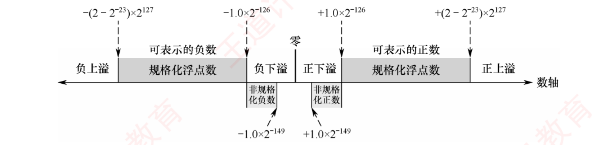
图 2.15 IEEE 754 单精度浮点数的表示范围（裁自王道 p.55）——本节最重要的一张图 ，九个区域从左到右：负上溢 | 规格化负数 | 非规格化负数 | 负下溢 | 零 | 正下溢 | 非规格化正数 | 规格化正数 | 正上溢 。四个边界值 ±(2−2−23 )×2127 与 ±1.0×2−126 ，非规格化区两端是 ±1.0×2−149 。"上溢/下溢/规格化/非规格化/零"这五类的相对位置，文字讲三遍不如看一眼数轴。
挖 · 上溢和下溢的处理为什么不对称？这是一个工程取舍，不是规定
书上说 ：上溢设为 ∞ ；下溢采用渐进下溢，用非规格化数保留部分精度 。潜台词是 ：两边放弃的东西不一样——上溢时放弃精度、保住量级 （∞ 至少还告诉你"这是个极大的数"）；下溢时放弃量级、多榨一点精度 （与其直接归零，不如用非规格化数续几位）。为什么值得这么做？ 因为非规格化数存在的唯一理由，就是填补"最小规格化数 2−126 "与"0"之间那段真空 （书上原话：填补 0 与最小规格化数之间的数值间隙）。没有它，两个很接近的小数相减会直接得 0，程序里 if (a != b) 成立但 a − b == 0，逻辑就乱了。所以能考 ：① 为什么要有非规格化数；② 最小非规格化正数 2−149 是怎么来的 ——2−126 （阶固定） × 2−23 （尾数只剩最低位那个 1） ；③ 图 2.15 上的九个区域各是什么。
挖 · 顺手回答书 p.75 常见问题 3：浮点数能表示的数比定点数少
书上说 （p.75）：n 位编码最多表示 2n 个不同比特模式。浮点数中部分编码用于表示 ±0、±∞ 和 NaN 等特殊值，实际可表示的有效实数个数少于 2n 。因此相同位数下，定点数通常能表示更多有效数值。 潜台词是 ：这一问专治一个特别顽固的直觉错误——"浮点数范围大 ⟹ 能表示的数更多"。错。 范围大只意味着这些数被摊得更稀疏 （数轴越往外，相邻两个可表示数之间的间隔越大），个数由位数唯一决定 ，甚至因为要拿编码去做特殊值而还少几个 。所以能考 ：判断题「浮点数比定点数能表示更多的数」——错 。配套记忆 ：±0 用了 2 个编码却只表示 1 个值；±∞ 用 2 个；NaN 更夸张——2 × (223 −1) 个编码全都表示"非数" 。光 NaN 就浪费掉了一千六百多万个编码。
挖 · 最大规格化数为什么写成 2127 ×(2−2−23 ) 而不是 2128
书上说 ：单精度最大值 = 1.111…1 × 2254−127 = 2127 × (2 − 2−23 )。潜台词是 ：这一步只是把"尾数 1.111…1"写成了 2 − 2−23 （23 个 1 的二进制小数，离 2 差最低位那一格）。它比 2128 略小 ——差的正是那一格。很多人凭感觉写 2128 ，看着接近，但在"能否表示某个数"的判断题里就是错。 所以能考 ：① 「下列哪个数不能用 float 表示」——上界要用准确值判断；② 与最小规格化数 2−126 一起构成图 2.15 的四个边界，这四个数要能默写 ；③ ⚠️ 注意最小值指的是"绝对值最小的规格化正数 2−126 "，不是"最小的负数" ——题目问"表示范围"时要答 ±(2−2−23 )×2127 这个双侧区间，问"最小正数"才答 2−126 。这两问的答案完全不同。
几种特殊的 IEEE 754 浮点数（表 2.3）
当阶码全为 0 或全为 1 时，浮点数具有特殊含义 ：
值的类型 符号 单精度阶码 尾数 单精度的值 双精度阶码 双精度的值 正零 / 负零 0 / 1 0 0 0 / −0 0 0 / −0 正无穷 / 负无穷 0 / 1 255（全 1） 0 ∞ / −∞ 2047（全 1） ∞ / −∞ 无定义数（非数） 0 或 1 255（全 1） f ≠ 0 NaN 2047（全 1） NaN 非规格化正/负数 0 / 1 0（全 0） f ≠ 0 ±2−126 × (0.f) 0（全 0） ±2−1022 × (0.f)
常用机器数（已复算）：+0 = 00000000H、−0 = 80000000H、+∞ = 7F800000H、−∞ = FF800000H、最小非规格化正数 00000001H = 2−149 。
四条解释：① 全 0 阶码全 0 尾数 = ±0 （通常 +0 与 −0 等效 ）；② 全 1 阶码全 0 尾数 = ±∞ （引入无穷大是为了让程序在溢出等异常下仍能继续执行 ）；③ 全 1 阶码非 0 尾数 = NaN ；④ 全 0 阶码非 0 尾数 = 非规格化数 （不使用隐藏位 ），用于实现渐进下溢。
陷阱 · 非规格化数的指数是 −126，不是 0 − 127 = −127（习题里最常见的错法）
阶码字段虽然是全 0，但 IEEE 754 规定非规格化数的指数按 −126 算 （双精度 −1022），不是按 e − 127 公式算出来的 −127 。为什么？ 为了和最小规格化数无缝衔接 ：最大的非规格化数是 0.111…1 × 2−126 ，正好紧挨在最小规格化数 1.0 × 2−126 的下方；要是按 −127 算，中间会凭空多出一个缺口 ，"渐进下溢"就不渐进了。⟹ 记法：非规格化数的指数 = 最小规格化数的指数 ，两者相同；差别只在有没有隐藏位（1.f vs 0.f）。
挖 · 表 2.3 只需要记四个格子，别背整张表
书上说 ：表 2.3 有 7 行 × 7 列。
潜台词是 ：这张表的信息量其实只有
2 × 2 = 4 格 ——
行看"阶码全 0 还是全 1"，列看"尾数是不是 0" ：
尾数 f = 0 尾数 f ≠ 0 阶码全 0 ±0 非规格化数 （无隐藏位，指数固定 −126）阶码全 1 ±∞ NaN
记法：全 0 那行"小得没法说"（0 和极小的数），全 1 那行"大得没法说"（∞ 和不是数）。
所以能考 ：
2017、2023 两年考特殊浮点数，问法都是"给一个机器数问它是什么"或"下列哪个表示 NaN"。
拿到机器数先看阶码字段是不是全 0/全 1，两秒定性。
串 · ±∞ 与 NaN 不是摆设，它们在别的科目里有实际用途
→ 本章 书上原话：引入无穷大数的目的，是使程序在溢出等异常情况下仍能继续执行 ——不中断、不崩溃，把"出事了"这个信息编码进数值本身往下传 。→ OS 这与"异常处理 "是两条不同的路线：浮点溢出默认不触发中断 （只置标志），而整数除零一定触发异常 。同样是出错，两种处理方式，这个对比常被拿来出判断题。 → 编程 / 数据结构 求最小值时把初值设为 +∞（Dijkstra、Prim 的 dist 数组），靠的正是"∞ 大于所有有限数"这条性质。→ 2.3.1 而 NaN 有一条反常性质：NaN ≠ NaN （它和任何数比较都不成立），这是判断一个 float 是否为 NaN 的标准写法 if (x != x)。⟹ IEEE 754 用编码空间换来了"错误也能参与运算"的能力，代价是那一千六百多万个被 NaN 占掉的编码。
实数与 IEEE 754 的相互转换（六年真题，本章最高频）
【例 2.5】 （p.56）把十进制 −8.25 转成 IEEE 754 单精度：
转二进制并规格化 ：−8.25 = −1000.01(2) = −1.00001 × 23 。
取尾数 ：小数点后取 23 位 ⟹ 000 0100 0000 0000 0000 0000（00001 后补 0 补满）。
算阶码 ：E − 127 = 3 ⟹ E = 130 = 1000 0010 。
拼装 s | e | f：1 ; 1000 0010 ; 000 0100 0000 0000 0000 0000 ⟹ C104 0000H ✅ Python struct.pack('<f', −8.25) 复算一致
【例 2.6】 （p.56）求单精度 C640 0000H 的值：
符号 阶码（8 位） 尾数（23 位） 1 1000 1100 100 0000 0000 0000 0000 0000
符号 = 1 ⟹ 负数。
阶码真值 = 1000 1100 − 0111 1111 = (0000 1101)2 = 13 。
尾数真值 （⚠️ 补回隐藏位 1 ）= 1 + (0.1)2 = 1.5 。
⟹ 该数为 −1.5 × 213 = −12288.0 ✅ 复算通过
挖 · 两道例题合起来就是一套"拆装八步"，六年真题全是这两个方向之一
书上说 ：例 2.5 是装，例 2.6 是拆。潜台词是 ：把这八步当公式默写，考场上不必现推 ——装（十进制 → 机器数） ：① 转二进制 → ② 规格化成 1.f × 2E → ③ 阶码 e = E + 127 → ④ 拼 s|e|f，f 补 0 至 23 位。拆（机器数 → 值） ：① 展开成二进制 → ② 按 1 / 8 / 23 切开 → ③ 阶码真值 E = e − 127 → ④ 尾数补回隐藏位 1 ，再乘 2E 。所以能考 ：2011 / 2013 / 2020 / 2022 / 2023 / 2025 六年，方向要么装要么拆，没有第三种 。提速技巧（书 p.74 的原话） ：若为选择题，可先算十进制的结果，再转成 IEEE 754 格式 ——综合题按位算（要写过程），选择题按值算（快） 。这是本章最值钱的一条应试建议。
挖 · 拆装时最容易翻车的三个地方（我做 50 道题踩过的）
书上没有专门提醒，但错法高度集中在这三处： 规格化时的指数符号 ：−1000.01 = −1.00001 × 2+3 左 移 3 位，指数为正）；而 0.00101 = 1.01 × 2−3 移动方向与指数正负相反，这里错了整题全废。 尾数补 0 补到几位 ：23 位 ，不是 24 位（第 24 位是隐藏位，不占字段）。数格子时容易少一位。十六进制切分要按 4 位重新分组 ：1|10000010|000 0100… 这三段的边界不在 4 的倍数上，必须把 32 位串连起来重新每 4 位一组 才能写成 C1040000H。直接把三段各自转十六进制是标准错法。 所以能考 ：这三处都不是"考点"，但它们是会做却做错 的三个口子。考前把例 2.5 完整默写一遍，比看十道题有用。
串 · "把整个 32 位当无符号整数比大小"——这是 IEEE 754 的隐藏福利
← 2.1.2 移码保序：因为阶码用移码、且阶码排在尾数前面，两个同号浮点数的大小顺序，与把它们的 32 位串当无符号整数比较的顺序完全一致 。→ ch5 CPU：所以浮点比较可以复用整数比较器 （只需先处理符号位），不必另造一套硬件。→ ch3 这也是"编码设计迁就硬件"的又一例（与 Cache 标记比较同理）。所以能考 ：2014 真题 考"IEEE 754 单精度数大小的比较"，方法就是先看符号位，同号再直接比后 31 位的无符号大小 （负数则反过来），根本不用还原成十进制 。
2.3.2 浮点数的加减运算
📄 p.56–58
考点追踪：浮点数的加减运算（2009）；float 型能否通过左移实现乘以 2（2017）；浮点数运算时的溢出判断（2015）
📕 浮点数运算的特点是阶码与尾数分开处理 ，加减法分五步：
① 对阶
目的 ：使两个操作数的小数点位置对齐，即令阶码相等 。原则：小阶向大阶看齐 ——把阶码较小 的数的尾数右移 ，右移位数 = 两阶码差的绝对值。对 IEEE 754 要做移码减法 求阶差。尾数右移时仅移动数值位，符号位不参与 ；规格化数的隐藏位 1 会随尾数右移进入小数部分，空出的高位补 0 。📕 为保证运算精度，移出的低位不应丢弃，而应保留并参与后续尾数运算。
陷阱 · 绝不能"大阶向小阶看齐"（书 p.56 注意栏）
若采用大阶向小阶看齐，则需将尾数左移 ，导致最高有效位被移出 ，造成不可逆的精度错误。
挖 · "小阶向大阶"是一条两害相权的工程选择，不是数学规定
书上说 ：对阶的原则是小阶向大阶看齐。潜台词是 ：两个方向都能对齐，代价完全不同 ——右移丢的是最低位 （精度损失可控，而且还能靠保留的附加位挽回一部分）；左移丢的是最高位 （数值直接错掉，且不可逆）。两害相权取其轻。 所以能考 ：给一个"大阶向小阶"的错误做法问后果——答：最高有效位被移出，产生不可逆的错误 。而不是笼统答"精度下降"。
挖 · "对阶时需要进行移码减法运算"这半句，考场上要落到笔头
书上说 ：对 IEEE 754 的浮点数，对阶时需要进行移码减法运算，以求得阶码差 。潜台词是 ：阶差可以直接用阶码字段相减 得到，不必先各自减 127 再相减 ——因为两边的偏置 127 在相减时自动抵消了：(ex −127) − (ey −127) = ex − ey 。这是移码的又一个便利。 所以能考 ：例 2.7 里阶差 130 − 133 = −3，直接拿两个 8 位字段减 ，一步到位。考场上写卷面时这样写既快又不会错 ；若绕道十进制真值（3 与 6 相减）虽然也对，但多两步、多两个出错机会。但"阶码相等"的判断和"谁大谁小"的判断也直接看字段即可 （移码保序），不要还原成真值再比 。
② 尾数加减
IEEE 754 用定点原码小数 表示尾数，所以尾数加减实质是定点原码小数的加减 。对规格化数，运算前要把隐藏位还原到尾数部分，形成完整的 1.f 形式 ；对阶时保留的附加位也要参与运算。
挖 · 就地破一个必然的困惑：尾数是"原码格式"，但不 用原码加减那套复杂规则
你读到这里一定会犯嘀咕 ：2.2.3 末尾刚说过"原码加减要先比绝对值大小、控制逻辑复杂，现代计算机不用"，这里却说尾数是原码——那浮点加减岂不是要用那套麻烦规则？ 书 p.76 常见问题 4 给了答案 ：尾数本身是无符号的，符号由独立的符号位表示。加减运算时，硬件根据操作数符号和运算类型，将尾数作为无符号整数送入通用 ALU 进行加或减，结果符号由控制逻辑生成。 ⟹ 一句话：尾数虽是原码格式 ，但送进 ALU 时当无符号数 算，符号单独处理。所以浮点尾数运算本质上是无符号整数运算，不需要原码加减机制。 所以能考 ：判断题「浮点运算部件中必须包含原码加减运算器」——错 。这是一个真实的易混点，书把答案藏在最后一页的常见问题里，很多人根本没读到。
③ 尾数规格化
📕 规格化是指通过调整尾数与阶码，使浮点数的尾数满足最高有效位为 1 的形式。 IEEE 754 的规格化尾数形如 1.×××。相加减后可能出现两类非规格化结果：
情形 结果形态 怎么办 次数 两数相加 1.××× + 1.××× = 1×.××× 右规 ：尾数每右移一位，阶码加 1 ；最高位 1 移至小数点前作隐藏位，最后一位移出时要考虑舍入 只需一次 两数相减 1.××× − 1.××× = 0.0…01××× 左规 ：尾数每左移一位，阶码减 1 ，直到第一位 1 移到小数点左边可能多次
📕 左规一次相当于乘以 2，右规一次相当于除以 2；需要右规时只需进行一次。
挖 · "右规只需一次，左规可能多次"——这不是经验，是能证明的
书上说 ：需要右规时只需进行一次。潜台词是 ：两个规格化数的尾数都落在 [1, 2) 里，它们的和必然落在 [2, 4)——最多只多出一位整数位 ，所以右移一次必回到 [1, 2)。相减会大量抵消高位 ：1.0001 − 1.0000 = 0.0001，前导零可以很多 ，所以左规要移多次（极端情况下移到尾数全空）。所以能考 ：① 判断「浮点加法后可能需要多次右规」——错 ；② 这条不对称性直接解释了为什么浮点减法会产生"大数吃小数"和"灾难性抵消" （两个很接近的数相减，左规把一堆没有意义的 0 移进来当有效位，结果的有效数字骤减）。这也是"浮点比较不能用 =="的深层原因。
④ 舍入
对阶和右规都会把低位挤出去。IEEE 754 引入三个辅助位 指导精确舍入：
位 位置 作用（我的记法） 保护位 guard 紧邻尾数最低有效位之后的第一位 "要不要考虑进位" 舍入位 round 保护位之后那一位 "离中点多远" 粘滞位 sticky 只要舍入位之后被移出的位中存在至少一个 1，就置 1 "后面还有没有零头"
四种舍入模式 ：① 就近舍入（默认） ——选最接近真实值的可表示数；若恰好在两个可表示数正中间，则选尾数最低有效位为 0 的那个（偶数） 。具体规则：保护位 = 0 直接舍去；保护位 = 1 且（舍入位 = 1 或粘滞位 = 1）则尾数加 1；保护位 = 1、舍入位 = 0、粘滞位 = 0（正好中点）时，尾数末位为奇数才加 1 。② 正向舍入 （朝 +∞）、③ 负向舍入 （朝 −∞）、④ 截断法 （直接丢弃，对正负数都是朝原点舍入 ，实现最简单）。
书上两个只差最后一位的对照例（均已复算）：
M₁ = 1.1011 0011 1100 1100 1101 010 1 0 1 保护1 舍入0 粘滞1 ⟹ 非中间值 ⟹ 尾数加 1
⟹ 23 位尾数变为 1011 0011 1100 1100 1101 011
M₂ = 1.1011 0011 1100 1100 1101 010 1 0 0 保护1 舍入0 粘滞0 ⟹ 正好中点
末位是 0（偶数）⟹ 不加 1 ，尾数保持 1011 0011 1100 1100 1101 010
挖 · 粘滞位是"用 1 个 bit 压缩掉全部被移出的位"，这是硬件的经典手法
书上说 ：只要舍入位之后被移出的位中存在至少一个 1，粘滞位就置 1。潜台词是 ：硬件不可能保留被移出的几十位 （对阶时可能右移上百位），但它只需要知道"后面是不是全 0"这一个事实 就足以判断"是不是正好在中点"。于是用一位记住"发生过 1"，其余细节全部丢弃。 所以能考 ：给三个辅助位的组合问舍入方向（M₁/M₂ 就是原型题）。关键是分清"中点"与"非中点"：粘滞位为 1 就一定不是中点。
串 · "用 1 bit 记住发生过某事，不记细节"——这个套路后面还有四处
→ ch3 Cache 的脏位（dirty bit） ：只记"被写过没有"，不记被写了哪几个字节。→ OS 页表的访问位 / 修改位 ：LRU 近似算法、写回策略全靠这两个 bit。→ ch7 中断请求触发器：只记"有请求"，不记请求了几次。→ 数学一 就近舍入 + 中点向偶数，在数值计算里叫"银行家舍入" ——之所以要向偶数，是为了让大量舍入的误差正负抵消 ，而不是一律向上导致系统性偏大。⟹ 见到"1 位标志"，先问"它压缩掉了什么信息、为什么那些信息可以不要"。
串 · 对阶导致的"大数吃小数"，是浮点最著名的坑
→ 本节 两数阶差很大时，小数被右移到全部有效位都移出去了 ，加了等于没加：float 里 1e8 + 1.0 == 1e8。→ 数学一 数值计算里叫"大数吃小数 "，对策是把一批数从小到大排序后再累加 。→ OS 用浮点累加时间片会逐次丢失零头，所以内核一律用整数计数（tick / jiffies） 。→ 2.3.1 它的根源正是"浮点数在数轴上是不均匀分布的 "——越往外相邻两数间隔越大，图 2.15 那条数轴上"规格化区"其实是越靠外越稀疏。⟹ 记住这条因果链：阶差大 → 对阶右移多 → 有效位被移光 → 加法失效。2017 综合题 第 4 问考的就是它的反面（舍入使结果变大）。
⑤ 溢出判断
📕 在 IEEE 754 中，浮点数的溢出由「阶码是否超出可表示范围」决定；尾数溢出可通过右规修正，而真正的溢出仅发生在阶码上溢或下溢时。
上溢 ：尾数相加后 ≥ 2，或舍入时末位加 1 引发进位（1.111… + 1 = 10.000…），都要右规（阶码加 1）。若原阶码已是最大规格化值（单精度阶码字段 1111 1110，真值 +127），加 1 后变成 1111 1111（该编码保留给 ∞ / NaN），则视为指数上溢 ，通常引发异常。下溢 ：左规时阶码减 1。若阶码真值降到最小规格化值（单精度 −126）以下，则进入非规格化数范围（阶码字段为 0）；若结果进一步小于最小可表示非规格化数（2−149 ），则视为指数下溢，通常置为机器零。
挖 · 浮点溢出只看阶码 ——这句话能帮你排除掉一半的干扰选项
书上说 ：尾数溢出可通过右规修正，真正的溢出仅发生在阶码上。潜台词是 ："尾数溢出"这个词在浮点里根本不成立 ——尾数多出一位就右规一次，阶码替它兜住了。只有当阶码自己也兜不住时，才是真溢出。 所以能考 ：2015 真题 考浮点溢出判断；选项里常出现"尾数溢出导致结果错误""尾数右移会引起溢出"——一律错 。唯一正确的判据是：阶码超出 [−126, +127]（单精度）。
【例 2.7】 （p.58）x = 10.5，y = −120.625（均为 float），求 x + y 的完整过程：
x = 10.5 = (1010.1)₂ = 1.0101 × 2³
s=0, e = 3+127 = 130 = 1000 0010
机器数 = 0;1000 0010;010 1000 0000 0000 0000 0000 (= 41280000H )
y = −120.625 = −(1111000.101)₂ = −1.111000101 × 2⁶
s=1, e = 6+127 = 133 = 1000 0101
机器数 = 1;1000 0101;111 0001 0100 0000 0000 0000 (= C2F14000H )
① 对阶：阶差 Eₓ − E_y = −3 ⟹ 把 x 的尾数右移 3 位 ，阶码调整为 133
x 的尾数 → 0.0010 1010 0000 0000 0000 000 000 （此时已无隐藏位 ，附加位在后）
② 尾数相加：
0.0010 1010 0000 0000 0000 000 000
+ (−1.1110 0010 1000 0000 0000 000)
= −1.1011 1000 1000 0000 0000 000 000 （附加位参与运算但不存储）
③ 规格化：结果 −1.1011100010… × 2⁶ 已是规格化形式 ，无须左右规
④ 舍入：附加位全 0，按就近舍入直接截断
结果机器数 = 1;1000 0101;1011 1000 1000 0000 0000 000 (= C2DC4000H )
真值 = −(1.101110001)₂ × 2⁶ = −(1101110.001)₂ = −110.125
✅ 全流程 Python 复算：10.5 + (−120.625) = −110.125，机器数 C2DC4000H，位串与书上逐位一致
挖 · 例 2.7 里"无须规格化"这一步，恰恰是最该注意的一步
书上说 ：第 ③ 步"已是规格化形式"，一笔带过。潜台词是 ：本例是异号相加（实为减法），照理该担心左规，但它没发生 ——因为两个数的阶差有 3，小的那个被右移后根本抵消不掉大数的高位 。只有两个数大小非常接近 时才会出现大量抵消、才需要多次左规。 所以能考 ：考场上做浮点加减，第 ③ 步不能跳过、但也别硬凑 ——先看结果的最高位在哪：在小数点左边第二位 ⟹ 右规一次；在小数点右边 ⟹ 左规到第一个 1；正好是 1.×× ⟹ 什么都不做 。写卷面时这一步必须写出来（哪怕结论是"无须规格化"），它是采分点。
串 · "浮点乘 2 能不能直接左移？"——2017 真题的一句陷阱
← 2.2.2 定点数左移一位 = 乘 2，这条对浮点数完全不成立 ：float 的位串左移会把阶码的最低位挤进尾数、把符号位挤掉 ，得到一个毫无意义的数。浮点乘 2 的正确做法是阶码加 1（即 e 字段加 1），尾数不动。 → ch4 所以指令系统里移位指令只对整数有意义 ，浮点有自己的一套运算指令。→ ch5 CPU 中浮点部件与定点部件是分开的 （各有各的寄存器组），原因就在这里。⟹ 2017 真题 问的正是"float 型能否通过左移实现乘以 2"，答案是不能 。
背景 · 考试不碰（2.3.2 里可以快速划过的两处）
① 除"就近舍入"外的另外三种舍入模式 （正向 / 负向 / 截断）：只需知道它们存在、以及各自朝哪个方向 。IEEE 754 默认就是就近舍入 ，统考题若不特别说明一律按默认；真正要会算的只有"就近 + 中点向偶数"这一种 。② 三个辅助位的硬件实现细节 （保护位/舍入位/粘滞位在寄存器里怎么维护、右移时怎么更新粘滞位）：考纲不要求 。你只需要会做"给出三位的取值 → 判断加不加 1 "这一件事（M₁/M₂ 那两个例子就是全部题型）。但"为什么中点要向偶数舍入"值得花 10 秒理解 （让大量舍入的误差正负抵消，而不是一律向上导致系统性偏大）——它在判断题里出现过。
2.3.3 C 语言中的浮点数类型
📄 p.58–59
考点追踪：不同类型数据转换后数值的变化（2010）；int 和 float 型的精度和范围分析（2017）
C 的 float 与 double 分别对应 IEEE 754 单精度与双精度 ；long double 通常对应扩展双精度，长度和格式依赖编译器与平台 。表达式中的赋值、运算或比较会触发自动（隐式）类型转换 ，常见序列为
char → int → long → double 和 float → double
转换通常由范围和精度较低的类型向更高者进行，一般不会丢失信息。混合运算遵循类型提升原则：较低类型自动转换为较高类型 （long 与 int 运算先把 int 转 long；float 与 double 运算先把 float 转 double）。
必记结论 · 四种关键转换的得失（考点密集，逐条背）
转换 范围够不够 有效位够不够 后果 int → float 够（float 范围远大于 int） 不够 （24 < 32）不会溢出，但可能丢精度 （整数有效位超过 24 位时要舍入）int / float → double 够 够（53 位） 无损 ，通常能精确表示原值double → float 不够 不够 可能溢出 + 舍入误差 float / double → int 可能不够 — 小数部分被直接丢弃（向零截断） ；超范围则整数溢出
📕
不同数据类型之间的转换常隐藏不易察觉的精度损失或溢出风险，编程时需格外谨慎。
挖 · 记这四条只看两件事，不用背四句话
书上说 ：分四条列出各自的后果。潜台词是 ：每一条都只在回答两个问题——「范围够不够」决定会不会溢出，「有效位够不够」决定会不会丢精度 。把这两列填出来，四条结论自动生成（见上表）。最反直觉、也最常考的是第一条 ：int → float 不会溢出但会丢精度 。很多人的直觉是"浮点数范围大，转过去肯定没问题"，但 float 只有 24 位有效数字，装不下 32 位的 int ——例如 (float)16777217（= 224 +1）会被舍成 16777216。所以能考 ：2017 真题 直接考"int 和 float 的精度和范围分析"，2010 真题 考"不同类型数据转换后数值的变化"。凡见 int 与 float 互转，先问"这个整数超过 224 ≈ 1677 万了吗"。
挖 · 三种取整方向，本章最值钱的一张对比表（三处考点在这里汇合）
书上把它们分散在三节里，从没并排放过 ——但考场上它们经常同时出现在一道题的不同小问里：
操作 取整方向 例子 出处 补码算术右移 向负无穷 −7 >> 1 = −4 2.2.2 C 的 / 与 float→int 向零 −7 / 2 = −3 ；(int)−3.9 = −3 2.3.3（本节） IEEE 754 默认舍入 就近，中点向偶数 M₂ 那个例子 2.3.2
潜台词是 ：
"取整"在组原里根本不是一个动作，而是三个不同的动作 ，凑巧对正数结果相同、
对负数或中点结果各不相同 。
命题人正是靠这一点设陷阱。
所以能考 ：①
x >> 1 与
x / 2 是否等价（负数不等价）；②
(int)(-3.5) 是 −3 还是 −4（
−3 ，向零）；③ 浮点舍入到中点时加不加 1（看末位奇偶）。
做题时先认出"这是哪一种取整"。
陷阱 · 📕 书 p.68 习题第 20 题的答案与它自己的解析矛盾 （我已复核 + 穷举验证）
该题四个说法中的说法 Ⅱ 大意是：三个 int 型数相加，用 double 保存结果一定精确 。书上印的答案是 D（"无正确项"），但书自己的解析里明确写着「说法 Ⅱ 永真」——两者互相矛盾。按解析，答案应为 C（仅 Ⅱ）。 我的复核 ：已用 dpi = 300 定点重渲该页，确认不是我转录抄错 ；再用 Python 穷验——30 万组随机三元组 + 全部极值组合，零反例 。理论依据：三个 32 位 int 之和最多需要 33 位有效数字，而 double 有 53 位，必然精确。 练习系统里该题按 C 收录，并标了「⚠️ 书答存疑」，书答与复核过程双栏并列。 这是本章抓出的第二处书误 （第一处是 p.43 的图号引用，见 2.2.4）。
串 · "隐式类型提升"会在 408 里咬你三次
← 2.1.4 整型之间的提升（char→int→long）就是本章前面讲的位扩展 ，补 0 还是补符号位看源类型。→ 2.3 综合题 05（2017 真题 ）第 1 问：for (unsigned i = n; i >= 0; i--) 死循环 ——因为 unsigned 与 int 混合比较时 int 会被提升为 unsigned ，而无符号数永远 ≥ 0。这是"隐式提升"最经典的杀伤案例。 → OS / 网络 缓冲区长度、序号比较也常因有符号/无符号混用出 bug（网络里的"序号回绕"要用无符号减法判断）。⟹ 见到表达式里类型不一致 ，先在草稿纸上写出提升后的类型，再判断真假。
串 · "取整方向"这件事，408 四科都要用，而且各有各的方向
→ ch3 存储系统：Cache 行数、页数、地址位数几乎都要向上取整 ⌈⌉ （"至少需要多少位地址"），与本节的三种取整都不同 ——它是数学上的取整，不是硬件行为。→ 数据结构 折半查找 mid = (low+high)/2 是向零 （C 的整除）；堆的父结点下标 ⌊i/2⌋ 是向下 ；两者对正数相同，所以平时看不出区别。 → OS 分页时"进程需要多少页" = ⌈进程大小 / 页大小⌉，向上 ；而"这个地址属于第几页" = ⌊地址 / 页大小⌋，向下 。同一节里两种方向并存，是丢分重灾区。 ⟹ 做题时把"这里该向哪边取整"当成一个需要显式回答的问题 ，不要凭手感。
2.3.4 数据的宽度和存储 ⭐⭐ 本章第二大高频小节
📄 p.59–60
考点追踪：数据的大小端存储（2016、2018、2019、2024、2025）；根据存放顺序判断大小端方式（2019、2023）；结构体的小端、边界对齐存储（2012、2020）
1．数据的宽度和单位
单位 定义 要点 比特 bit（b） 最小信息单位，一个二进制位 注意小写 b 字节 byte（B） 基本的存储和编址单位 ，1 B = 8 b注意大写 B ；📕 传统计算机系统中 KB/MB/GB 按 2 的幂定义 （1 KB = 210 B = 1024 B） 字 word 由体系结构定义的逻辑单位 ，长度因架构而异 （常见 2、4 或 8 字节）x86 里"字"永远是 16 位 ，32 位叫"双字"（历史包袱） 字长（机器字长） CPU 内部整数运算数据通路的宽度，通常等于通用寄存器的宽度 📕 日常说的"32 位机""64 位机"指的就是字长
陷阱 · 「字」≠「字长」（书特意举了 x86 的例子）
Intel x86 自 80386 起字长为 32 位 ，但其体系结构仍将 16 位定义为一个字，32 位称为双字 。"某机字长 32 位"与"某机一个字为 16 位"可以同时成立，不矛盾。 ⭐ 书上的定性句：字是架构层面的约定，而字长体现的是硬件的实际处理能力。 必须回题干找它给的定义 ，不要默认等于字长。
串 · 到此为止，你已经见过四个不同的"字长" （ch1 埋的坑，本章填了两个）
← ch1 机器字长 = CPU 通用寄存器宽度（本节又定义了一遍）。→ ch3 存储字长 = 一个存储单元的位数，与机器字长可以不等 ；按字节编址还是按字编址直接影响地址位数的计算。→ ch4 指令字长 = 一条指令占多少位，与机器字长的倍数关系决定取指要访存几次。→ ch6 数据总线宽度 = 一次并行传多少位，常与字长相等但不是同一回事 。⚠️ 加上本节的"字"，一共五个近义词。从现在起每见一个就在题干上标清是哪一个 ——这是组原前四章最常见的暗错源。
挖 · B 与 b、K 与 k：本章最廉价也最高频的失分点
书上说 ：比特符号为 b ，字节符号为 B ，1 B = 8 b；KB/MB/GB 按 2 的幂定义 。潜台词是 ：408 的计算题几乎每道都要在"位"和"字节"之间换算一次，而题干常常故意混着给 ——存储容量给 B ，总线带宽给 b/s ，Cache 块大小给 B ，数据通路宽度给 位 。少乘或多乘一个 8，整道大题全废。 所以能考 ：① ch1 的 MIPS/带宽计算；② ch3 的"主存容量 / 地址位数 / Cache 行数"；③ ch6 的总线带宽（常用 MB/s，但总线宽度按位给 ）；④ 网络 的信道速率（b/s ）与文件大小（B ）。⟹ 立一条硬规矩：拿到题先在草稿纸最上方写一行"本题统一用 ×× 为单位"，把所有量先换算过去，再开始算。
串 · "字节编址"这四个字，是 ch3 一切地址计算的前提
→ ch3 存储系统：题目会明确区分"按字节编址"与"按字编址" ——同样 1 MB 的主存，按字节编址需要 20 位地址，按字（4 B）编址只需 18 位 。读漏这四个字，地址位数就会差 2。 → ch3 Cache 块内地址位数 = log2 (块大小)，块大小按什么单位给，位数就跟着变 。→ ch4 指令系统：指令地址的"下一条指令 = PC + 1 还是 PC + 4"，取决于编址单位 ——按字节编址且指令 4 字节时是 +4。⚠️ 这是组原三大章共用的一个前置条件，每道题都要先在题干里把它找出来 ，找不到就是题目默认按字节编址。
2．大端方式与小端方式
数据从低位到高位可以从左到右排，也可以从右到左排，所以不宜用"最左/最右"，而用 最低有效字节 LSB 与 最高有效字节 MSB 。例如 32 位 int 变量 i 的机器数为 01 23 45 67H ，则 MSB = 01H、LSB = 67H 。
📕 现代计算机普遍采用字节编址 （每个地址对应 1 字节），而程序中每个变量只分配一个起始地址 。设 i 的地址是 0800H，它的 4 个字节排法有两种（此即书上图 2.16，用表重排后更清楚）：
方式 0800H 0801H 0802H 0803H 与书写顺序的关系 大端 big endian 01H 23H 45H 67H MSB 在低地址 ⟹ 一致（照抄） 小端 little endian 67H 45H 23H 01H LSB 在低地址 ⟹ 相反（倒抄）
📕 分析机器代码时需特别注意字节顺序。 书上的反汇编例子：
4004d3: 01 05 64 94 04 08 add eax, 0x08049464
└──指令机器码──┘ └──汇编形式──┘
立即数 0x08049464 在内存中按地址递增 顺序存为：64H、94H、04H、08H
低地址放的是 LSB(64H)，高地址放的是 MSB(08H) ⟹ 小端方式
⟹ 阅读小端机器代码时，要把连续字节按逆序组合 才能还原逻辑数值 ✅ 复算通过
挖 · 大小端题只有两种问法，认出是哪一种，题就做完了一半
书上说 ：图 2.16 讲"数值怎么存"，反汇编例子讲"字节怎么读回来"。潜台词是 ：这是同一件事的正反两问，考场上必须先认出题目问的是哪一个方向 ：给数值，问存放顺序 （图 2.16 型）：先把机器数按十六进制写出来，然后 大端 = 照抄，小端 = 倒着抄 。给内存字节，问数值 （反汇编型，2019 / 2023 真题 ）：小端要把字节逆序拼回去 ，大端直接连起来。解题口诀就是书上那句话本身：「大端与标准书写顺序一致」 ——记住这一条，另一条自动是它的反面，不必背两条 。逆序的是字节，不是位 ——每个字节内部的 8 位顺序不变 （64H 还是 64H，不会变成 46H）。这是最常见的错法。
挖 · "每个变量只分配一个起始地址"，这句轻描淡写的话是大小端问题的根源
书上说 ：程序中每个变量仅分配一个起始地址。潜台词是 ：一个 4 字节的 int 占 4 个地址，但指针只记住其中最小的那个 。于是必须约定：从这个地址开始往后数的 4 个字节，哪个是高位、哪个是低位？ ——大小端之争就此产生，而且这纯粹是约定，没有对错 （x86 小端、部分 RISC 与网络字节序大端）。所以能考 ：① *(char*)&i 取到的是哪个字节？小端取到 LSB，大端取到 MSB ——这正是 C 语言里判断本机大小端的标准写法 ；② 2019、2023 就考"根据存放顺序判断大小端方式"，本质就是这个实验。
3．数据按"边界对齐"方式存储
在字长 32 位的系统中，边界对齐要求数据的存储地址是其对齐值（通常等于该类型大小，单位字节）的整数倍 ：字节可位于任意地址，半字地址须为 2 的倍数，字地址须为 4 的倍数 。满足时 CPU 可通过一次访存读取完整数据；否则若数据跨越两个存储单元，则需两次访问并拼接字节，显著降低效率 。为满足对齐要求，编译器会在必要时填充空白字节 ——这种"以空间换时间" 的策略略微增加内存占用，但大幅提升访问速度。
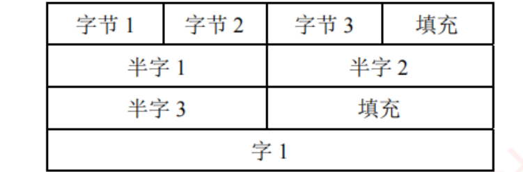
图 2.17 按边界对齐 方式存储（王道 p.60）——每行 4 字节，宁可填充也不跨行 ：字节 1/2/3 + 填充、半字 1 + 半字 2、半字 3 + 填充、字 1 独占一行。
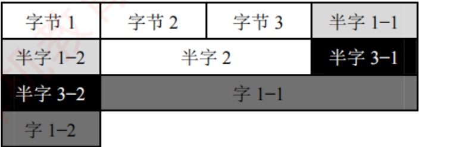
图 2.18 按边界不对齐 方式存储（王道 p.60）——一个字节不浪费，代价是深色块里的半字 1、半字 3、字 1 全被劈成两段跨行 ：读它们要访存两次 再拼接。
▲ 两图务必并排看：右图省下了一行的空间，却把三个数据各变成了两次访存 ——这就是"空间换时间"的原话。
必记结论 · C 语言 struct 的两条对齐规则（2012、2020 真题的全部依据）
① 每个成员的起始地址必须是其对齐值的整数倍 （char 为 1，short 为 2，int 为 4）；整个结构体的大小必须是其最大成员对齐值的整数倍 （不足则在尾部填充）。
书上的两个对照例（32 位 x86 + GCC）——成员完全相同，只是声明顺序不同 ：
struct A{ struct B{
int a; char b;
char b; int a;
short c; short c;
} }
结果：sizeof(A) = 8，sizeof(B) = 12 ✅ 我用对齐算法模拟复算，成员偏移与书上完全一致
struct A（从 0x0000 起） 偏移 struct B（从 0x0000 起） 偏移 a（int，对齐值 4） 0x0000 ~ 0x0003 b（char，对齐值 1） 0x0000 b（char，对齐值 1） 0x0004 填充 3 字节 0x0001 ~ 0x0003 填充 1 字节 0x0005 a（int，对齐值 4） 0x0004 ~ 0x0007 c（short，对齐值 2） 0x0006 ~ 0x0007 c（short，对齐值 2） 0x0008 ~ 0x0009 总大小 = 8，无须尾部填充 （8 是 4 的倍数） 当前 10 字节，尾部再填 2 ⟹ 总大小 12 0x000A ~ 0x000B
📕 精简指令集计算机（RISC）普遍采用边界对齐，以支持高效的指令流水线。
挖 · 同样三个成员，换个顺序就多占 50%——编译器不会替你重排
书上说 ：sizeof(A) = 8，sizeof(B) = 12。
潜台词是 ：
C 标准要求结构体成员按声明顺序 布局，编译器不允许 擅自重排 （否则跨编译单元、跨语言的二进制兼容就完了）。所以
"填充多少"完全由你写代码的顺序决定 。
心算口诀（三句话，考场上照做即可） ：
从偏移 0 开始，每个成员先把当前偏移推到它对齐值的整数倍 （推不动就原地），再放下它、偏移加上它的大小。
全部放完后，把总长推到最大对齐值 的整数倍 （尾部填充）。
要省空间就按对齐值从大到小声明 （int → short → char），填充最少。
所以能考 ：①
2012、2020 直接给 struct 求 sizeof 或求某成员的地址；② 反过来问"如何调整声明顺序以节省空间"。
⚠️ 注意第 ② 步的尾部填充最容易漏——B 算到 10 就收手是标准错法。
挖 · 为什么"跨越两个存储单元就要访存两次"？——这句话是 ch3 的入场券
书上说 ：若数据跨越两个存储单元，则需两次访问并拼接字节，显著降低效率。潜台词是 ：主存不是"想读几个字节就读几个字节"，它一次只能读出一整个存储单元（一个字） 。一个 4 字节的 int 若横跨两个字，硬件就得读两次、各取一半、再拼起来——时间翻倍，还要额外的拼接逻辑 。所以能考 ：① 为什么 RISC 强制要求对齐（流水线里每条访存指令的时间必须可预测，不能有的一次、有的两次 ）；② ch3 里同样的道理会变成"Cache 块划分 "和"主存按字/按字节编址 "的计算题。⟹ 这也是 x86 与 RISC 的一个真实差别：x86 允许非对齐访问（自动多访存一次，慢），多数 RISC 直接报异常 。
挖 · 「结构体对齐 + 小端」是复合题，两个知识点缺一不可（2012 / 2020 / 2025）
书上把大小端和边界对齐分成两个小节讲 ，但
真题从 2012 年起就一直把它们合在一道题里考 。
标准解法有固定顺序，不能颠倒 ：
先算对齐布局 ：用上面的心算口诀，写出每个成员的起始偏移 与占几个字节 （这一步只跟对齐规则有关，跟大小端无关）。
再定每个成员的值的机器数 （补码 / IEEE 754 拆装，可能还要用到 2.1、2.3.1 的内容）。
最后按小端把每个成员的字节倒着填进它的那几个地址 （⚠️ 逐个成员分别倒序，不是把整个结构体倒过来 ）。
所以能考 ：
2012、2020、2025 三年。
⚠️ 第 ③ 步那个"逐个成员倒序"是最大的坑 ——结构体是若干独立变量的拼接，
大小端只作用在单个变量内部 ，填充字节和成员之间的顺序不受影响。
串 · "以空间换时间"这六个字，是 408 的第一大枢纽
→ ch3 Cache ：花掉一块昂贵的 SRAM，换取访存时间的下降；TLB / 快表 同理。→ ch3 边界对齐本身就是 Cache 块划分要处理的问题（一个数据跨两个 Cache 块 = 两次访问）。→ OS 页表、位示图、空闲链表，全是"多存一份索引换取查找变快"。→ 数据结构 散列表、标记数组、并查集的路径压缩。→ 网络 ARP 缓存、路由表缓存。⚠️ 这是 CLAUDE 级的跨科枢纽：凡是看到"多占了空间"，先问"它换来了什么时间"。反过来也成立——凡是"变快了"，先问"它多占了什么"。
串 · 大小端不只是组原的事，网络里它有个专门的名字
→ 网络 网络字节序 = 大端 。TCP/IP 首部里的端口号、序号、校验和全部按大端传输，所以 x86（小端）主机每次收发都要调用 htons/htonl 做字节序转换。→ ch4 指令系统：反汇编读立即数要逆序拼（本节的例子就是），做机器码分析题 时必用。→ OS 文件格式、可执行文件（ELF）头部都要显式声明字节序，否则跨平台读不出来。⟹ 一句话：只要数据要离开这台机器（存盘、上网），就必须约定字节序 ；只在寄存器和内存之间转，字节序是透明的。
背景 · 考试不碰
① KB/MB/GB 的十进制歧义 （硬盘厂商用 103 、操作系统用 210 ，以及 KiB/MiB 这套 IEC 前缀）：408 里一律按 2 的幂算 ，题目也不会考这个歧义本身。② long double 的扩展双精度格式 （x87 的 80 位）：依赖平台，考纲未列 。③ 大小端的历史与命名来源 （《格列佛游记》里为"从大头还是小头敲鸡蛋"打仗）：当段子记，不会考 。
2.4 本章小结：回答开头那四个问题
📄 p.75–76
读到这里，先合上页面自己答一遍，再往下看。答不出的那一问，回到对应小节重读。
必记结论 · ① 为什么采用二进制表示数据？
硬件实现成本低 （只需两种稳定物理状态的器件）· 1/0 恰好对应逻辑真假 ，直接支持逻辑运算与条件判断 · 运算规则极为简单 ，用基本门电路即可高效实现。（详见 2.1.1，2018 真题 ）
必记结论 · ② 字长足够就能精确表示每个数吗？
不能。 整数 ：只要在字长可表示的范围内，就能精确表示。小数（实数） ：二进制只能精确表示形如若干个 1/2k 之和的有理数 。许多十进制有限小数在二进制下是无限循环小数，例如 0.1 = (0.000110011 0011…)2 。因此即使字长很长，这类数值也只能被近似表示。 （详见 2.1.1 与 2.3）
必记结论 · ③ 同字长下，浮点数与定点数的范围与精度有何区别？
表示范围 ：浮点数通过阶码可表示极大或极小的数值，远大于定点数 。表示精度 ：定点数把所有位都用于数值本身，具有恒定且较高的绝对精度 ；浮点数要分一部分位给阶码，尾数位数减少，有效精度降低，且精度随数值增大而下降 。浮点数以牺牲精度换取更大的表示范围，定点数以固定精度为代价限制其数值范围。
必记结论 · ④ 用移码表示阶码有什么好处？
① 便于阶码比较 ：浮点加减运算要先比较两数阶码，移码保序，比较更方便 （详见 2.1.2）。支持特殊值的统一编码 ：阶码全 0 时——尾数为 0 表示 ±0，尾数非 0 表示非规格化数 ；阶码全 1 时——尾数为 0 表示 ±∞，尾数非 0 表示 NaN （如 0/0、∞−∞ 等无效运算结果）。
挖 · 第 ④ 问的第 ② 条是"事后追认"的好处，这个因果关系值得想清楚
书上说 ：移码的好处有两条——便于比较、支持特殊值编码。潜台词是 ：这两条不是并列的，第二条是第一条的副产品 。移码的本意只是"让阶码可以按无符号比大小"；但正因为它把阶码映射成了从全 0 到全 1 的连续无符号区间 ，才使得"从两端各切一格出来做特殊值 "变成一件顺理成章、且不破坏中间部分单调性的事。所以能考 ：「为什么规格化阶码只到 1~254 而不是 0~255？ 」——因为两端那两格被征用了。而如果阶码用的是补码，被征用的会是"数轴中间的两个值"，剩下的部分就不再连续了。
挖 · 综合题 05（2017 真题 ）是 ch2 的"总复习题"，一题打通全章
这道 5 问的大题在一道题里同时考了本章五个知识点，
值得当作本章的收官自测 ：
①
unsigned 比较导致死循环 （2.1.4 隐式类型提升）；②
int 溢出后变 −1 （2.1.2 补码范围）；③
float 只有 24 位有效位 （2.3.1 隐藏位）；④
舍入会使数值增大 （2.3.2 就近舍入）；⑤
阶码上溢变 +∞ （2.3.2 溢出判断）。
三个关键的 n 值必须记死 ：
n = 23 时结果精确 （f(23) 是 24 个 1，正好用满 float 的 24 位有效位）；
n = 30 是 f1 与 f(n) 相等的上限 ；
n = 126 是 f2 不溢出的上限 （再大阶码就到 254 这个最大规格化阶码了）。
⟹ 这道题在练习系统 里按大题三层（思路 → 考场卷面 → 批注）拆过，做完它基本等于把 2.3 复习了一遍。
串 · 本章往后看：ch2 是哪几章的地基
→ ch3 存储系统：地址即无符号数 （2.1.3）、地址划分即位截断 （2.1.4）、边界对齐与访存次数 （2.3.4）、⌈log2 ⌉ 求位数 （2.2.1）。→ ch4 指令系统：符号扩展 （2.1.4）、条件转移分两套 （2.2.3）、移位指令分两套 （2.2.2）、反汇编读小端立即数 （2.3.4）、EDX:EAX 寄存器对 （2.2.4）。→ ch5 CPU：ALU 与四标志 （2.2.1）、关键路径决定周期 （2.2.1）、浮点部件独立 （2.3.2）、PSW 进上下文 （2.2.1）。→ ch7 / OS ：除零异常与中断向量表 （2.2.4）。⟹ ch2 本身在统考里约占 6~8 分，但它被后面每一章反复使用 。这一章欠的账，会在 ch3 和 ch5 连本带利地还。
2.5 常见问题与易混淆知识点
书上的四条常见问题，我已经拆开插进对应小节就地讲 了（这样读到那里正好用得上），这里只做索引：
常见问题 核心结论 我放在哪一节 1. 数值数据都是二进制吗？ 数值表示分两类：二进制数值 （无符号数、补码、浮点数）与 BCD 码 （4 位二进制编一位十进制）。📕 所有数据在物理存储上都是二进制比特序列，区别仅在于解释规则；BCD 并非真正的"十进制表示"，而是按十进制语义解释的二进制编码。 章首导语 （这是整章总纲「一串位，两种语义」的官方表述）2. 什么叫无符号整数的"溢出"？ 结果 ≥ 2n 时硬件只保留低 n 位（对 2n 取模），截断后的值不等于真实结果。通过 CF 检测。 2.2.3 标志位 3. 同位数下浮点数比定点数能表示的数多吗？ 不是。 n 位最多 2n 个比特模式，浮点还要拿一部分去表示 ±0、±∞、NaN，有效实数个数少于 2n 。2.3.1 表示范围 （图 2.15 旁）4. 现代计算机要考虑原码加减吗？ 不实现。 IEEE 754 尾数虽是原码格式，但尾数本身无符号、符号由独立符号位表示 ，运算时作为无符号整数送入通用 ALU ，结果符号由控制逻辑生成。2.3.2 尾数加减 （就地破"原码格式 ≠ 原码运算"）
背景 · 考试不碰
BCD 码 ：⚠️ 2027 版王道正文里没有 BCD 码的独立小节 （全章只在常见问题 1 里提了一次），考纲也未列入 。知道"用 4 位二进制编码一位十进制数、它仍然是二进制"即可，不必去学 8421 码/余 3 码/格雷码那一套 ——那是数字电路的内容，不在 408 范围内。
本章读完之后做什么：
本章一句话总结： ch2 从头到尾只在讲一件事——
「一串位，两种语义」 。2.1 教你有几把尺子（原/补/反/移、有符号/无符号），2.2 告诉你
硬件只有一套电路、两个标志给你自己挑 ，2.3 把这件事推到极致（同一串位可以是 int 也可以是 float，还可以按字节拆开重排）。
凡是做错的题，回头问一句"我这里用错哪把尺子了"，八成就是答案。
本章战果： 123 题全部 Python 复算，
抓出书上两处错误 ——p.43 的图号引用（图 2.11 应为图 2.12）与 p.68 习题 20 的答案自相矛盾（应为 C）。
书的正文数值本身可靠，145 处复算零误差。
精读版 · 计算机组成原理第 2 章 · 源：王道《2027 计算机组成原理考研复习指导》p.20–76（57 页） · 插图 13 张裁自原书（图 2.3–2.12、2.15、2.17、2.18），位域图、大小端表、表 2.1–2.3 一律改写为可搜索的表格